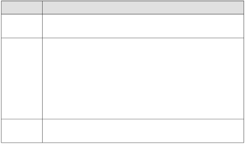

<!doctype html>
<html lang="en" class="no-js">
  <head>
    
      <meta charset="utf-8">
      <meta name="viewport" content="width=device-width,initial-scale=1">
      
      
      
      
        <link rel="prev" href="..">
      
      
        <link rel="next" href="../v5/">
      
      
      <link rel="icon" href="../images/favicon.ico">
      <meta name="generator" content="mkdocs-1.6.1, mkdocs-material-9.5.43">
    
    
      
        <title>Introduction - Konan Search</title>
      
    
    
      <link rel="stylesheet" href="../assets/stylesheets/main.0253249f.min.css">
      
      


    
    
      
    
    
      
        
        
        <link rel="preconnect" href="https://fonts.gstatic.com" crossorigin>
        <link rel="stylesheet" href="https://fonts.googleapis.com/css?family=Roboto:300,300i,400,400i,700,700i%7CRoboto+Mono:400,400i,700,700i&display=fallback">
        <style>:root{--md-text-font:"Roboto";--md-code-font:"Roboto Mono"}</style>
      
    
    
    <script>__md_scope=new URL("..",location),__md_hash=e=>[...e].reduce(((e,_)=>(e<<5)-e+_.charCodeAt(0)),0),__md_get=(e,_=localStorage,t=__md_scope)=>JSON.parse(_.getItem(t.pathname+"."+e)),__md_set=(e,_,t=localStorage,a=__md_scope)=>{try{t.setItem(a.pathname+"."+e,JSON.stringify(_))}catch(e){}}</script>
    
      

    
    
    
  </head>
  
  
    <body dir="ltr">
  
    
    <input class="md-toggle" data-md-toggle="drawer" type="checkbox" id="__drawer" autocomplete="off">
    <input class="md-toggle" data-md-toggle="search" type="checkbox" id="__search" autocomplete="off">
    <label class="md-overlay" for="__drawer"></label>
    <div data-md-component="skip">
      
    </div>
    <div data-md-component="announce">
      
    </div>
    
    
      

  

<header class="md-header md-header--shadow" data-md-component="header">
  <nav class="md-header__inner md-grid" aria-label="Header">
    <a href=".." title="Konan Search" class="md-header__button md-logo" aria-label="Konan Search" data-md-component="logo">
      
  

    </a>
    <label class="md-header__button md-icon" for="__drawer">
      
      <svg xmlns="http://www.w3.org/2000/svg" viewBox="0 0 24 24"><path d="M3 6h18v2H3zm0 5h18v2H3zm0 5h18v2H3z"/></svg>
    </label>
    <div class="md-header__title" data-md-component="header-title">
      <div class="md-header__ellipsis">
        <div class="md-header__topic">
          <span class="md-ellipsis">
            Konan Search
          </span>
        </div>
        <div class="md-header__topic" data-md-component="header-topic">
          <span class="md-ellipsis">
            
              Introduction
            
          </span>
        </div>
      </div>
    </div>
    
    
      <script>var palette=__md_get("__palette");if(palette&&palette.color){if("(prefers-color-scheme)"===palette.color.media){var media=matchMedia("(prefers-color-scheme: light)"),input=document.querySelector(media.matches?"[data-md-color-media='(prefers-color-scheme: light)']":"[data-md-color-media='(prefers-color-scheme: dark)']");palette.color.media=input.getAttribute("data-md-color-media"),palette.color.scheme=input.getAttribute("data-md-color-scheme"),palette.color.primary=input.getAttribute("data-md-color-primary"),palette.color.accent=input.getAttribute("data-md-color-accent")}for(var[key,value]of Object.entries(palette.color))document.body.setAttribute("data-md-color-"+key,value)}</script>
    
    
    
      <label class="md-header__button md-icon" for="__search">
        
        <svg xmlns="http://www.w3.org/2000/svg" viewBox="0 0 24 24"><path d="M9.5 3A6.5 6.5 0 0 1 16 9.5c0 1.61-.59 3.09-1.56 4.23l.27.27h.79l5 5-1.5 1.5-5-5v-.79l-.27-.27A6.52 6.52 0 0 1 9.5 16 6.5 6.5 0 0 1 3 9.5 6.5 6.5 0 0 1 9.5 3m0 2C7 5 5 7 5 9.5S7 14 9.5 14 14 12 14 9.5 12 5 9.5 5"/></svg>
      </label>
      <div class="md-search" data-md-component="search" role="dialog">
  <label class="md-search__overlay" for="__search"></label>
  <div class="md-search__inner" role="search">
    <form class="md-search__form" name="search">
      <input type="text" class="md-search__input" name="query" aria-label="Search" placeholder="Search" autocapitalize="off" autocorrect="off" autocomplete="off" spellcheck="false" data-md-component="search-query" required>
      <label class="md-search__icon md-icon" for="__search">
        
        <svg xmlns="http://www.w3.org/2000/svg" viewBox="0 0 24 24"><path d="M9.5 3A6.5 6.5 0 0 1 16 9.5c0 1.61-.59 3.09-1.56 4.23l.27.27h.79l5 5-1.5 1.5-5-5v-.79l-.27-.27A6.52 6.52 0 0 1 9.5 16 6.5 6.5 0 0 1 3 9.5 6.5 6.5 0 0 1 9.5 3m0 2C7 5 5 7 5 9.5S7 14 9.5 14 14 12 14 9.5 12 5 9.5 5"/></svg>
        
        <svg xmlns="http://www.w3.org/2000/svg" viewBox="0 0 24 24"><path d="M20 11v2H8l5.5 5.5-1.42 1.42L4.16 12l7.92-7.92L13.5 5.5 8 11z"/></svg>
      </label>
      <nav class="md-search__options" aria-label="Search">
        
        <button type="reset" class="md-search__icon md-icon" title="Clear" aria-label="Clear" tabindex="-1">
          
          <svg xmlns="http://www.w3.org/2000/svg" viewBox="0 0 24 24"><path d="M19 6.41 17.59 5 12 10.59 6.41 5 5 6.41 10.59 12 5 17.59 6.41 19 12 13.41 17.59 19 19 17.59 13.41 12z"/></svg>
        </button>
      </nav>
      
    </form>
    <div class="md-search__output">
      <div class="md-search__scrollwrap" tabindex="0" data-md-scrollfix>
        <div class="md-search-result" data-md-component="search-result">
          <div class="md-search-result__meta">
            Initializing search
          </div>
          <ol class="md-search-result__list" role="presentation"></ol>
        </div>
      </div>
    </div>
  </div>
</div>
    
    
  </nav>
  
</header>
    
    <div class="md-container" data-md-component="container">
      
      
        
          
        
      
      <main class="md-main" data-md-component="main">
        <div class="md-main__inner md-grid">
          
            
              
              <div class="md-sidebar md-sidebar--primary" data-md-component="sidebar" data-md-type="navigation" >
                <div class="md-sidebar__scrollwrap">
                  <div class="md-sidebar__inner">
                    


<nav class="md-nav md-nav--primary" aria-label="Navigation" data-md-level="0">
  <label class="md-nav__title" for="__drawer">
    <a href=".." title="Konan Search" class="md-nav__button md-logo" aria-label="Konan Search" data-md-component="logo">
      
  

    </a>
    Konan Search
  </label>
  
  <ul class="md-nav__list" data-md-scrollfix>
    
      
      
  
  
  
  
    <li class="md-nav__item">
      <a href=".." class="md-nav__link">
        
  
  <span class="md-ellipsis">
    Home
  </span>
  

      </a>
    </li>
  

    
      
      
  
  
    
  
  
  
    
    
    
    
    <li class="md-nav__item md-nav__item--active md-nav__item--nested">
      
        
        
        <input class="md-nav__toggle md-toggle " type="checkbox" id="__nav_2" checked>
        
          
          <label class="md-nav__link" for="__nav_2" id="__nav_2_label" tabindex="0">
            
  
  <span class="md-ellipsis">
    Version 4
  </span>
  

            <span class="md-nav__icon md-icon"></span>
          </label>
        
        <nav class="md-nav" data-md-level="1" aria-labelledby="__nav_2_label" aria-expanded="true">
          <label class="md-nav__title" for="__nav_2">
            <span class="md-nav__icon md-icon"></span>
            Version 4
          </label>
          <ul class="md-nav__list" data-md-scrollfix>
            
              
                
  
  
    
  
  
  
    <li class="md-nav__item md-nav__item--active">
      
      <input class="md-nav__toggle md-toggle" type="checkbox" id="__toc">
      
      
      
      <a href="./" class="md-nav__link md-nav__link--active">
        
  
  <span class="md-ellipsis">
    Introduction
  </span>
  

      </a>
      
    </li>
  

              
            
          </ul>
        </nav>
      
    </li>
  

    
      
      
  
  
  
  
    
    
    
    
    <li class="md-nav__item md-nav__item--nested">
      
        
        
        <input class="md-nav__toggle md-toggle " type="checkbox" id="__nav_3" >
        
          
          <label class="md-nav__link" for="__nav_3" id="__nav_3_label" tabindex="0">
            
  
  <span class="md-ellipsis">
    Version 5
  </span>
  

            <span class="md-nav__icon md-icon"></span>
          </label>
        
        <nav class="md-nav" data-md-level="1" aria-labelledby="__nav_3_label" aria-expanded="false">
          <label class="md-nav__title" for="__nav_3">
            <span class="md-nav__icon md-icon"></span>
            Version 5
          </label>
          <ul class="md-nav__list" data-md-scrollfix>
            
              
                
  
  
  
  
    <li class="md-nav__item">
      <a href="../v5/" class="md-nav__link">
        
  
  <span class="md-ellipsis">
    Introduction
  </span>
  

      </a>
    </li>
  

              
            
          </ul>
        </nav>
      
    </li>
  

    
      
      
  
  
  
  
    
    
    
    
    <li class="md-nav__item md-nav__item--nested">
      
        
        
        <input class="md-nav__toggle md-toggle " type="checkbox" id="__nav_4" >
        
          
          <label class="md-nav__link" for="__nav_4" id="__nav_4_label" tabindex="0">
            
  
  <span class="md-ellipsis">
    Version 6
  </span>
  

            <span class="md-nav__icon md-icon"></span>
          </label>
        
        <nav class="md-nav" data-md-level="1" aria-labelledby="__nav_4_label" aria-expanded="false">
          <label class="md-nav__title" for="__nav_4">
            <span class="md-nav__icon md-icon"></span>
            Version 6
          </label>
          <ul class="md-nav__list" data-md-scrollfix>
            
              
                
  
  
  
  
    <li class="md-nav__item">
      <a href="../v6/" class="md-nav__link">
        
  
  <span class="md-ellipsis">
    Introduction
  </span>
  

      </a>
    </li>
  

              
            
          </ul>
        </nav>
      
    </li>
  

    
  </ul>
</nav>
                  </div>
                </div>
              </div>
            
            
              
              <div class="md-sidebar md-sidebar--secondary" data-md-component="sidebar" data-md-type="toc" >
                <div class="md-sidebar__scrollwrap">
                  <div class="md-sidebar__inner">
                    

<nav class="md-nav md-nav--secondary" aria-label="Table of contents">
  
  
  
  
</nav>
                  </div>
                </div>
              </div>
            
          
          
            <div class="md-content" data-md-component="content">
              <article class="md-content__inner md-typeset">
                
                  


  <h1>Introduction</h1>

<p><strong>Konan LLM</strong></p>
<p></p>
<p><strong>Copyright Notice</strong></p>
<p>서울특별시 서초구 강남대로 327 대륭서초타워 6, 7, 9층</p>
<p>저작권</p>
<p>Copyright Konan Technology Inc. All rights reserved.</p>
<p>이 매뉴얼의 저작권은 (주)코난테크놀로지에 있습니다. 이 매뉴얼은 (주)코난테크놀로지의 허 락 없이 전부 혹은 일부를 무단으로 인용, 복사, 전재, 유포 혹은 재사용할 수 없습니다.</p>
<p>유지<strong> 보수</strong> 문의</p>
<p>제품 유지 보수 및 문의는 고객서비스팀으로 문의 바랍니다.</p>
<ul>
<li>Tel : 02-3469-8588</li>
<li>E-Mail : cs@konantech.com</li>
</ul>
<p>내용** 목차</p>
<ol>
<li><a href="#_page8_x51.00_y63.80"><strong>Konan LLM</strong> 사용자<strong> 포털 </strong>.</a><strong>............................................................................ 1 <a href="#_page10_x84.20_y63.80">1<strong>장</strong>    개요 </a>................................................................................................ <a href="#_page10_x84.20_y63.80">3** </a><a href="#_page12_x84.20_y63.80">2<strong>장</strong>    용어설명 </a>......................................................................................... <a href="#_page12_x84.20_y63.80">5**</a></strong></li>
</ol>
<p><a href="#_page14_x84.20_y63.80"><strong>3</strong>장<strong>    화면</strong> 및<strong> 기능설명 </strong>..</a><strong>........................................................................... 7</strong></p>
<ol>
<li><a href="#_page14_x84.20_y102.50">메인 화면 .</a>............................................................................... <a href="#_page14_x84.20_y102.50">7</a></li>
<li><a href="#_page14_x84.20_y468.90">문서 생성 .</a>............................................................................... <a href="#_page14_x84.20_y468.90">7</a></li>
<li><a href="#_page15_x79.10_y416.80">채팅 </a>........................................................................................ <a href="#_page15_x79.10_y416.80">8</a></li>
<li><a href="#_page18_x84.20_y63.80">요약 </a>...................................................................................... <a href="#_page18_x84.20_y63.80">11</a></li>
<li><a href="#_page18_x84.20_y437.40">번역 </a>...................................................................................... <a href="#_page18_x84.20_y437.40">11</a></li>
<li><a href="#_page20_x51.00_y63.80"><strong>Konan LLM</strong> 스튜디오 </a><strong>............................................................................... <a href="#_page20_x51.00_y63.80">13**</a></strong></li>
</ol>
<p><a href="#_page22_x84.20_y63.80"><strong>1</strong>장**    개요 </a><strong>.............................................................................................. <a href="#_page22_x84.20_y63.80">15**</a></strong></p>
<p><a href="#_page22_x84.20_y282.50">1.1.    주요 개념 .</a>............................................................................. <a href="#_page22_x84.20_y282.50">15</a></p>
<ol>
<li><a href="#_page22_x84.20_y336.60">텍스트 생성 모델 ...</a>..................................................... 15</li>
<li><a href="#_page22_x84.20_y525.20">임베딩 </a>........................................................................ <a href="#_page22_x84.20_y525.20">15</a></li>
<li><a href="#_page23_x79.10_y114.20">토큰 </a>........................................................................... <a href="#_page23_x79.10_y114.20">16</a></li>
</ol>
<p><a href="#_page24_x84.20_y63.80"><strong>2</strong>장<strong>    모델</strong> 관리 **..</a><strong>..................................................................................... <a href="#_page24_x84.20_y63.80">17**</a></strong></p>
<ol>
<li><a href="#_page24_x84.20_y138.50">모델 목록 .</a>............................................................................. <a href="#_page24_x84.20_y138.50">17</a></li>
<li><a href="#_page24_x84.20_y233.10">종류 </a>...................................................................................... <a href="#_page24_x84.20_y233.10">17</a></li>
<li><a href="#_page24_x84.20_y393.40">기본 모델 .</a>.................................................................. <a href="#_page24_x84.20_y393.40">17</a></li>
<li><a href="#_page25_x79.10_y63.80">미세 조정 모델 ..</a>.......................................................... 18</li>
<li><a href="#_page25_x79.10_y138.60">상태 </a>...................................................................................... <a href="#_page25_x79.10_y138.60">18</a></li>
<li><a href="#_page26_x84.20_y63.80">액션 </a>...................................................................................... <a href="#_page26_x84.20_y63.80">19</a></li>
</ol>
<p><a href="#_page28_x84.20_y63.80"><strong>3</strong>장<strong>    추가</strong> 학습 **..</a><strong>..................................................................................... <a href="#_page28_x84.20_y63.80">21**</a></strong></p>
<ol>
<li><a href="#_page28_x84.20_y124.10">개요 </a>...................................................................................... <a href="#_page28_x84.20_y124.10">21</a></li>
<li><a href="#_page28_x84.20_y261.90">추가 학습이 필요한 경우 .....</a>................................................... 21</li>
<li><a href="#_page28_x84.20_y370.90">도메인 지식의 변경이 예상 되는가? ..........</a>................... 21</li>
<li><a href="#_page28_x84.20_y451.50">학습 데이터를 얼마나 확보할 수 있는가? ...........</a>........... 21</li>
<li><a href="#_page28_x84.20_y532.10">충분한 학습 시간과 GPU 자원을 확보할 수 있는가? ...... 21</a></li>
<li><a href="#_page29_x79.10_y63.80">추가 학습 절차 ..</a>..................................................................... 22</li>
<li><a href="#_page29_x79.10_y86.80">데이터셋 준비 ..</a>........................................................... 22</li>
<li><a href="#_page29_x79.10_y304.80">추가 학습 실행 ..</a>.......................................................... 22</li>
<li><a href="#_page30_x84.20_y330.20">추가 학습 모델 평가 ....</a>................................................ 23</li>
</ol>
<p><strong>iii</strong></p>
<p><strong>Konan LLM</strong></p>
<p><a href="#_page32_x84.20_y63.80"><strong>4</strong>장<strong>    미세</strong> 조정 **..</a><strong>..................................................................................... <a href="#_page32_x84.20_y63.80">25**</a></strong></p>
<ol>
<li><a href="#_page32_x84.20_y124.10">개요 </a>...................................................................................... <a href="#_page32_x84.20_y124.10">25</a></li>
<li><a href="#_page32_x84.20_y369.90">미세 조정이 필요한 경우 .....</a>................................................... 25</li>
<li><a href="#_page33_x79.10_y121.40">미세 조정 사례 ..</a>..................................................................... <a href="#_page33_x79.10_y121.40">26</a></li>
<li><a href="#_page34_x84.20_y114.20">미세 조정 절차 ..</a>..................................................................... <a href="#_page34_x84.20_y114.20">27</a></li>
<li><a href="#_page34_x84.20_y280.80">데이터셋 준비 ..</a>........................................................... <a href="#_page34_x84.20_y280.80">27</a></li>
<li><a href="#_page36_x84.20_y206.90">미세 조정 모델 만들기 ....</a>............................................. 29</li>
<li><a href="#_page37_x79.10_y323.00">미세 조정 모델 사용 ....</a>................................................ 30</li>
<li><a href="#_page37_x79.10_y403.60">미세 조정 모델 평가 ....</a>................................................ 30</li>
<li><a href="#_page39_x79.10_y150.20">미세 조정 예시 ..</a>..................................................................... <a href="#_page39_x79.10_y150.20">32</a></li>
<li><a href="#_page39_x79.10_y315.00">작성 </a>........................................................................... <a href="#_page39_x79.10_y315.00">32</a></li>
<li><a href="#_page40_x84.20_y107.00">질의/응답 .</a>.................................................................. <a href="#_page40_x84.20_y107.00">33</a></li>
<li><a href="#_page40_x84.20_y258.60">요약 </a>........................................................................... <a href="#_page40_x84.20_y258.60">33</a></li>
<li><a href="#_page41_x79.10_y224.50">번역 </a>........................................................................... <a href="#_page41_x79.10_y224.50">34</a></li>
<li><a href="#_page41_x79.10_y453.90">분류 </a>........................................................................... <a href="#_page41_x79.10_y453.90">34</a></li>
</ol>
<p><a href="#_page44_x84.20_y63.80"><strong>5</strong>장<strong>    프롬프트</strong> 갤러리 **...</a><strong>.......................................................................... 37</strong></p>
<ol>
<li><a href="#_page44_x84.20_y217.70">프롬프트 작성 ..</a>...................................................................... <a href="#_page44_x84.20_y217.70">37</a></li>
<li><a href="#_page44_x84.20_y326.70">변수 추출 .</a>............................................................................. <a href="#_page44_x84.20_y326.70">37</a></li>
</ol>
<p><a href="#_page46_x84.20_y63.80"><strong>6</strong>장<strong>    플레이</strong> 그라운드 **..</a><strong>........................................................................... <a href="#_page46_x84.20_y63.80">39**</a></strong></p>
<p><a href="#_page46_x84.20_y152.90">6.1.    페이지 구성 ..</a>......................................................................... <a href="#_page46_x84.20_y152.90">39</a></p>
<p><a href="#_page50_x84.20_y63.80"><strong>7</strong>장**    데이터셋 </a><strong>....................................................................................... <a href="#_page50_x84.20_y63.80">43**</a></strong></p>
<ol>
<li><a href="#_page50_x84.20_y138.50">추가 학습 .</a>............................................................................. <a href="#_page50_x84.20_y138.50">43</a></li>
<li><a href="#_page50_x84.20_y218.70">데이터셋 추가 ..</a>........................................................... <a href="#_page50_x84.20_y218.70">43</a></li>
<li><a href="#_page50_x84.20_y487.60">데이터셋 삭제 ..</a>........................................................... <a href="#_page50_x84.20_y487.60">43</a></li>
<li><a href="#_page51_x79.10_y63.80">데이터 정제 ..</a>......................................................................... <a href="#_page51_x79.10_y63.80">44</a></li>
<li><a href="#_page51_x79.10_y438.30">데이터 정제 옵션 ...</a>..................................................... 44</li>
<li><a href="#_page55_x79.10_y509.60">데이터 정제 절차 ...</a>..................................................... 48</li>
<li><a href="#_page56_x84.20_y207.80">미세 조정 .</a>............................................................................. <a href="#_page56_x84.20_y207.80">49</a></li>
<li><a href="#_page56_x84.20_y288.00">데이터셋 추가 ..</a>........................................................... <a href="#_page56_x84.20_y288.00">49</a></li>
<li><a href="#_page56_x84.20_y447.80">데이터셋 삭제 ..</a>........................................................... <a href="#_page56_x84.20_y447.80">49</a></li>
<li><a href="#_page56_x84.20_y517.30">데이터 등록 .</a>............................................................... <a href="#_page56_x84.20_y517.30">49</a></li>
</ol>
<p><a href="#_page58_x84.20_y63.80"><strong>8</strong>장<strong>    프롬프트</strong> 설계 **...</a><strong>............................................................................. 51</strong></p>
<ol>
<li><a href="#_page58_x84.20_y152.90">프롬프트 구조 ..</a>...................................................................... <a href="#_page58_x84.20_y152.90">51</a></li>
<li><a href="#_page58_x84.20_y207.00">프롬프트 정의 ..</a>........................................................... <a href="#_page58_x84.20_y207.00">51</a></li>
<li><a href="#_page58_x84.20_y323.60">프롬프트 구성 요소 ....</a>................................................. 51</li>
</ol>
<p><strong>iv</strong></p>
<p><strong>Konan LLM</strong></p>
<ol>
<li><a href="#_page59_x79.10_y346.60">프롬프트 설계 전략 ....</a>............................................................ 52</li>
<li><a href="#_page59_x79.10_y403.90">파라미터 설정 ..</a>........................................................... 52</li>
<li><a href="#_page61_x79.10_y258.20">효과적인 프롬프트 작성 전략 .......</a>................................ 54</li>
<li><a href="#_page65_x79.10_y397.10">트러블슈팅 </a>................................................................. <a href="#_page65_x79.10_y397.10">58</a></li>
<li><a href="#_page66_x84.20_y343.70">프롬프트 예제 ..</a>...................................................................... 59</li>
<li><a href="#_page66_x84.20_y481.50">텍스트 생성 .</a>............................................................... <a href="#_page66_x84.20_y481.50">59</a></li>
<li><a href="#_page69_x79.10_y103.40">요약 </a>........................................................................... <a href="#_page69_x79.10_y103.40">62</a></li>
<li><a href="#_page70_x84.20_y174.40">분류 </a>........................................................................... <a href="#_page70_x84.20_y174.40">63</a></li>
</ol>
<p><strong>v</strong></p>
<p>그림** 목차</p>
<p><a href="#_page14_x84.20_y178.90">[그림 3.1]    메인화면 .</a>....................................................................................... <a href="#_page14_x84.20_y178.90">7 </a><a href="#_page15_x79.10_y63.80">[그림 3.2]    문서 생성 메뉴 화면 .....</a>................................................................... 8 <a href="#_page16_x84.20_y63.80">[그림 3.3]    채팅 메뉴 화면 ....</a>............................................................................ 9 <a href="#_page17_x89.90_y63.80">[그림 3.4]    파일 업로드 화면 ....</a>....................................................................... 10 <a href="#_page17_x89.90_y362.90">[그림 3.5]    RAG 검색 화면 ..</a>............................................................................ 10 <a href="#_page18_x84.20_y129.10">[그림 3.6]    요약 메뉴 화면 ....</a>.......................................................................... 11 <a href="#_page19_x79.10_y63.80">[그림 3.7]    번역 메뉴 화면 ....</a>.......................................................................... 12 <a href="#_page46_x84.20_y234.90">[그림 6.1]    플레이 그라운드 화면 ......</a>.............................................................. 39</p>
<p><strong>vii</strong></p>
<p><a name="_page8_x51.00_y63.80"></a><strong>Part I. Konan LLM</strong> 사용자** 포털</p>
<p>1**</p>
<p><strong>1.</strong> 개요</p>
<p>Konan LLM 사용자 포털은 LLM 스튜디오에서 생성한 모델과 프롬프트를 사용하여 LLM을 원하는 응용 분야에 적용할 수 있습니다. Konan LLM 사용자 포털을 통해 다음 과 같은 작업들을 수행할 수 있습니다.</p>
<ol>
<li>문서** 생성: 사용자가 제공한 주제 또는 키워드를 바탕으로 높은 품질의 문서를 자동 으로 작성합니다. 보고서, 기사, 이메일 등 다양한 유형의 문서를 손쉽게 생성할 수 있습니다.</li>
<li>채팅<strong>:</strong> 사용자의 문서 또는 학습된 LLM 기반으로 사용자의 질문에 대한 답변을 제공 하여 필요한 정보를 빠르게 찾을 수 있습니다.</li>
<li>요약: 길고 복잡한 문서를 빠르게 요약하여 핵심 내용을 전달합니다. 이를 통해 사 용자들은 시간과 노력을 절약하면서 중요한 정보를 쉽게 파악할 수 있습니다.</li>
<li>번역: 생성된 문서나 기존 문서를 여러 언어로 번역할 수 있습니다. 이 서비스는 자 연스러운 번역 결과를 제공하며, 다양한 언어 간의 커뮤니케이션을 돕습니다.</li>
</ol>
<p>3**</p>
<ol>
<li>용어설명</li>
</ol>
<p>용어 설명</p>
<p>LLM LLM은 대규모 언어 모델(Large Language Model)의 약자로, 방대</p>
<p>한 양의 텍스트 데이터를 학습한 인공지능(AI) 모델입니다. 주로 자 연어 처리(NLP) 작업에 사용되며, 인간 언어를 이해하고 생성하는 능력을 가지고 있습니다. 대표적인 예로 OpenAI의 GPT 시리즈, Google의 BERT, 그리고 Meta의 LLaMA 등이 있습니다.</p>
<p>청크 청크는 데이터를 효율적으로 처리하거나 기억하기 위해 일정한 크</p>
<p>기로 나누어, 컴퓨터나 인간이 더 쉽게 다룰 수 있도록 만드는 방법. Rag RAG는 <strong>Retrieval-Augmented Generation</strong>의 약자로, 정보 검색</p>
<p>(Retrieval)과 언어 생성(Generation)을 결합한 AI 기술을 의미합니</p>
<p>다. RAG 모델은 먼저 대규모 외부 데이터베이스나 문서에서 관련</p>
<p>정보를 검색하고, 그 정보를 바탕으로 질문에 대한 답변을 생성합</p>
<p>니다. 이 방식은 단순한 언어 모델보다 더 정확하고 신뢰할 수 있는</p>
<p>정보를 생성할 수 있어, 챗봇, Q&amp;A 시스템, 문서 요약 등에 사용됩</p>
<p>니다.</p>
<p>5**</p>
<ol>
<li>화면<strong> 및</strong> 기능설명</li>
<li>메인<a name="_page14_x84.20_y102.50"></a>** 화면</li>
</ol>
<p><a name="_page14_x84.20_y178.90"></a>시스템에 접속 후 로그인 하면 다음과 같이 메인 화면으로 진입 합니다.</p>
<p></p>
<p><strong>[</strong>그림 <strong>3.1]</strong> 메인화면</p>
<ol>
<li>헤더 메뉴로서 문서생성, 채팅, 요약, 번역 기능 페이지로 이동할 수 있습니다.</li>
<li>문서생성을<a name="_page14_x84.20_y468.90"></a> 위한 서식 목록으로 원하는 서식을 클릭하여 바로 문서생성 기능을 사 용할 수 있습니다.</li>
<li>문서** 생성</li>
</ol>
<p>문서생성 메뉴로 선택한 양식에 내용을 채우고 문서를 작성할 수 있는 기능입니다.</p>
<p>7<strong>
3. 화면</strong> 및** 기능설명</p>
<p></p>
<p><a name="_page15_x79.10_y63.80"></a><strong>[</strong>그림 <strong>3.2]</strong> 문서<strong> 생성</strong> 메뉴** 화면</p>
<ol>
<li>문서 서식별로 내용을 입력하고 문서작성 버튼을 클릭하면 문서를 생성합니다.</li>
<li>문서 서식별 예시를 입력 또는 초기화 할 수 있습니다.</li>
<li>작성된 문서는 마크다운뷰 원본 텍스트를 볼 수 있습니다.</li>
<li>작성된 문서에 대해 문서를 편집할 수 있습니다.</li>
<li>작성된<a name="_page15_x79.10_y416.80"></a> 문서에 대해 제목생성, 복사, 삭제, 다운로드를 할 수 있습니다.</li>
<li>채팅</li>
</ol>
<p>사용자의 문서 또는 학습된 LLM 기반으로 사용자의 질문에 대한 답변을 제공하여 필 요한 정보를 빠르게 찾을 수 있습니다.</p>
<p></p>
<p><a name="_page16_x84.20_y63.80"></a><strong>[</strong>그림 <strong>3.3]</strong> 채팅<strong> 메뉴</strong> 화면</p>
<ol>
<li>입력 창에 명령어를 작성하고 엔터키 또는 버튼을 클릭하여 LLM 답변을 확인할 수 있습니다.</li>
<li>각각의 대화의 응답 결과에 대해 복사 기능을 제공 합니다.</li>
<li>Rag 검색을 위해 파일을 업로드 하고 선택된 파일의 내용을 기반으로 LLM 답변을 할 수 있습니다.</li>
</ol>
<p></p>
<p><a name="_page17_x89.90_y63.80"></a><strong>[</strong>그림 <strong>3.4]</strong> 파일<strong> 업로드</strong> 화면</p>
<ol>
<li>선택한<a name="_page17_x89.90_y362.90"></a> 문서에서 명령어와 관련된 내용(청크)를 찾는 경우 참고문서 영역에서 이를 표시하고 클릭하면 팝업으로 상세 내용을 확인할 수 있습니다.</li>
</ol>
<p></p>
<p><strong>[</strong>그림 <strong>3.5] RAG</strong> 검색** 화면</p>
<ol>
<li>요약</li>
</ol>
<p><a name="_page18_x84.20_y63.80"></a>길고 복잡한 문서를 빠르게 요약하여 핵심 내용을 전달합니다. 이를 통해 사용자들은 <a name="_page18_x84.20_y129.10"></a>시간과 노력을 절약하면서 중요한 정보를 쉽게 파악할 수 있습니다.</p>
<p></p>
<p><strong>[</strong>그림 <strong>3.6]</strong> 요약<strong> 메뉴</strong> 화면</p>
<ol>
<li>요약할 내용을 입력하고 요약하기를 클릭하여 번역된 내용을 우측 화면에 표시합 니다.</li>
<li>요약할 내용은 직접입력, 문서첨부를 통하여 입력할 수 있습니다.</li>
<li>요약된<a name="_page18_x84.20_y437.40"></a> 내용은 복사, 다운로드 기능을 제공 합니다.</li>
<li>번역</li>
</ol>
<p>생성된 문서나 기존 문서를 여러 언어로 번역할 수 있습니다. 이 서비스는 자연스러운 번역 결과를 제공하며, 다양한 언어 간의 커뮤니케이션을 돕습니다.</p>
<p>11<strong>
</strong>Konan LLM**</p>
<p></p>
<p><a name="_page19_x79.10_y63.80"></a><strong>[</strong>그림 <strong>3.7]</strong> 번역<strong> 메뉴</strong> 화면</p>
<ol>
<li>번역할 내용을 입력하고 번역하기를 클릭하여 번역된 내용을 우측 화면에 표시합 니다.</li>
<li>번역할 내용과 번역할 언어를 선택하면 선택된 언어에 따라 번역이 진행 됩니다.</li>
<li>번역할 내용은 직접입력, 문서첨부를 통하여 입력할 수 있습니다.</li>
<li>번역된 내용은 복사, 다운로드 기능을 제공 합니다.</li>
</ol>
<p>13**</p>
<p><a name="_page20_x51.00_y63.80"></a><strong>Part II. Konan LLM</strong> 스튜디오</p>
<ol>
<li>개요</li>
</ol>
<p>LLM 스튜디오는 생성형 언어 모델 코난 LLM을 빠르게 프로토타이핑하고 테스트 해 볼 수 있는 도구입니다. 자신만의 프롬프트를 설계하여 테스트하고 공유할 수 있습니 다. 또한 기본 모델을 미세 조정하여 원하는 응용 분야에 적용할 수 있습니다. LLM 스 튜디오를 통해 다음과 같은 작업들을 수행할 수 있습니다.</p>
<ul>
<li>모델 관리</li>
<li>모델 학습</li>
<li>프롬프트 갤러리</li>
<li>플레이그라운드</li>
</ul>
<p><a name="_page22_x84.20_y282.50"></a><strong>1.1. <a name="_page22_x84.20_y336.60"></a></strong>주요** 개념</p>
<ol>
<li>텍스트<strong> 생성</strong> 모델</li>
</ol>
<p>텍스트 생성 모델은 자연어 처리 분야에서 인공지능을 접목하여 자연스러운 문장을 만들어 내도록 학습한 모델입니다.</p>
<p>사전학습한 데이터의 양과 품질, 다루고 있는 영역에 따라 텍스트 생성 모델의 잠재력 이 결정되며, 미세조정을 통해서 사람의 지시를 정확하게 따를 수 있는 능력이 발현되 기 시작합니다.</p>
<p>이에 따라 텍스트 생성 모델은 크게 “사전학습 모델”과 “미세조정 모델”로 나누어 집니 <a name="_page22_x84.20_y525.20"></a>다. 사용자의 목적, 적용 범주에 따라 사전학습 모델에 전문 지식 분야에 대한 추가학 습을 진행하기도 하고, 미세조정 모델에 대한 추가적인 미세조정을 통해 보다 원하는 형식의 텍스트 생성이란 목표를 달성할 수 있습니다.</p>
<ol>
<li>임베딩</li>
</ol>
<p>임베딩이란 고차원 벡터를 변환할 수 있는 비교적 저차원의 공간입니다. 주로 언어 모 델에서는 글자, 단어, 문장으로 확대되면서 복잡해지는 언어를 적절한 크기의 분절로</p>
<p>17**</p>
<p>나눈 뒤, 이를 일정한 크기의 실수 벡터 형태로 변환시켜 사용합니다. 이러한 임베딩은 다양한 수준(단어, 문장 등)에서 활용 가능하고, 유사한 문장 찾기, 검색, 주요 주제 군 <a name="_page23_x79.10_y114.20"></a>집화, 이상 데이터 탐지와 같은 분야에서 사용할 수 있습니다.</p>
<ol>
<li>토큰</li>
</ol>
<p>언어 모델에서의 토큰은 자연어 처리를 위해 여러 문자를 일정한 기준에 따라 나눈 것 을 의미합니다. 목적에 따라 하나의 토큰은 자소 단위에서부터 문장 단위까지 확장될 수도 있습니다. 토큰 기준으로 임베딩이 구성되기 때문에 저차원에서도 적절한 정보 수준을 유지할 수 있도록 언어학적, 통계학적 지식을 이용하게 되며, 대개 한국어 단어 는 형태소 단위로 토큰이 나누어지게 됩니다. 또한, 이러한 토큰은 실제로 언어 모델이 처리하는 단위로서 한번에 처리 가능한 최대 정보량을 나타내는 단위가 되기도 합니 다.</p>
<ol>
<li>모델** 관리</li>
</ol>
<p>LLM 스튜디오를 통해 다양한 기능을 가진 여러 모델들을 관리할 수 있습니다. 또한 미 <a name="_page24_x84.20_y138.50"></a>세 조정을 통해 필요한 용도에 맞게 모델을 새롭게 정의할 수 있습니다.</p>
<ol>
<li>모델** 목록</li>
</ol>
<p>모델 관리 메뉴를 클릭하면 LLM 스튜디오에서 접근할 수 있는 모델들의 목록을 확인 <a name="_page24_x84.20_y233.10"></a>할 수 있습니다.</p>
<ol>
<li>종류</li>
</ol>
<p>모델 관리 페이지에서 확인할 수 있는 모델들의 유형은 다음과 같습니다.</p>
<p>유형 설명</p>
<p>기본모델 LLM 스튜디오를 통해 다양한 업무를 위해 미세 조정할 수 있는</p>
<p><a name="_page24_x84.20_y393.40"></a>사전 학습된 모델</p>
<p>미세조정모델 미세조정을 거쳐 업무에 적용할 수 있는 모델</p>
<ol>
<li>기본** 모델</li>
</ol>
<table>
<thead>
<tr>
<th>모델명</th>
<th>설명</th>
<th>속성</th>
</tr>
</thead>
<tbody>
<tr>
<td>kylin-13b-2308</td>
<td>자연어를 이해하고 생성할 수 있는 파 운데이션 모델</td>
<td>2K</td>
</tr>
<tr>
<td>kylin-13b-inst-dpo-2312</td>
<td>kylin-13b 모델에 대한 인스트럭션 튜닝 모델</td>
<td>4K</td>
</tr>
<tr>
<td>kylin-embedding-2310</td>
<td>텍스트 입력에 대한 임베딩 벡터 반환</td>
<td></td>
</tr>
<tr>
<td>kylin-safety-2312</td>
<td>유해성 텍스트 분류 모델</td>
<td></td>
</tr>
<tr>
<td>2. 미세<a name="_page25_x79.10_y63.80"></a><strong> 조정</strong> 모델</td>
<td></td>
<td></td>
</tr>
</tbody>
</table>
<p>모델명 설명</p>
<p>kylin-13b-2308-sft-2310 kylin-13b 모델에 대한 미세 조정 모델</p>
<ol>
<li>상태</li>
</ol>
<p><a name="_page25_x79.10_y138.60"></a>모델의 현재 상태를 표시합니다.</p>
<p>상태 설명</p>
<p>로딩중 모델이 로딩 중에 있습니다. 로딩이 완료되면 실행 중 상태로 변경됩니</p>
<p>다.</p>
<p>실행중 모델을 로드한 상태입니다.</p>
<ul>
<li>프롬프트 템플릿이나 플레이그라운드 페이지에서 모델을 실행하기 위해서는 먼저 모델을 로드해야 합니다.</li>
<li>모델 학습 시 CPU, GPU, 메모리 등 자원이 부족할 경우에는 자원 확 보를 위해 [언로드] 버튼을 클릭하여 모델을 언로드합니다.</li>
</ul>
<p>학습완료 학습이 완료된 상태이며 [로드] 버튼을 클릭하여 모델을 활성화할 수</p>
<p>있습니다.</p>
<p>학습중 학습을 진행 중인 상태입니다. 현재 학습 진행율이 함께 표시됩니다.</p>
<p>[중지] 버튼을 클릭하여 학습을 중단할 수 있습니다.</p>
<ul>
<li>학습 진행 중인 모델만 중단할 수 있습니다.</li>
<li>학습 중인 모델이 있을 경우 모델 관리를 제외한 다른 메뉴들은 비활 성화됩니다.</li>
</ul>
<p>중지 학습을 중지한 상태입니다. [재시작] 버튼을 클릭하여 학습을 다시 시</p>
<p>작할 수 있습니다.</p>
<p>오류 학습 중에 실패한 상태입니다.</p>
<p>삭제중 모델이 삭제 중에 있습니다. 삭제가 완료되면 목록에서 제거됩니다.</p>
<ol>
<li>모델** 관리</li>
<li>액션</li>
</ol>
<p><a name="_page26_x84.20_y63.80"></a>액션 [ ]버튼을 클릭하면 각각의 모델에 대해 수행할 수 있는 액션을 선택할 수 있습 니다.</p>
<ul>
<li>로드</li>
<li>모델이 서비스를 수행할 수 있도록 로드합니다. 로딩이 완료된 모델은 [실행중] 상 태로 변경됩니다. [학습완료] 상태의 모델만 로드할 수 있습니다.</li>
<li>언로드</li>
<li>실행중인 모델을 언로드합니다. 언로드된 모델은 다시 [학습완료] 상태로 변경됩 니다.</li>
<li>배포</li>
<li>학습이 완료된 모델을 배포합니다.</li>
<li>모델명: 배포할 모델명이 표시됩니다.</li>
<li>배포 모델명: 배포 받을 모델명을 입력합니다.</li>
<li>호스트: 배포 받을 서버의 IP 주소 및 포트번호를 입력합니다.</li>
<li>배포 후 로드: 체크 시 배포가 완료되면 자동으로 모델을 로드합니다.</li>
<li>중지</li>
<li>모델 학습을 일시적으로 중지합니다.</li>
<li>재시작</li>
<li>학습이 중지된 모델을 다시 학습합니다. 모델 학습 시 [중간 결과 저장] 옵션을 활 성화한 경우 이전에 저장한 시점부터 학습이 재개됩니다.</li>
<li>모델명 변경</li>
<li>모델명을 변경합니다.</li>
<li>삭제</li>
<li>모델을 삭제합니다. 이미 삭제한 모델은 복구할 수 없습니다.</li>
<li>추가** 학습</li>
</ul>
<p><a name="_page28_x84.20_y124.10"></a>도메인 지식을 모델에 주입하는 방법을 알아보세요.</p>
<ol>
<li>개요</li>
</ol>
<p>코난 LLM은 방대한 양의 텍스트로 학습되어서 언어를 이해하고 생성하는 능력이 뛰 어납니다. 또한 다양한 지식을 가지고 있습니다. 그러나 특정 조직에서 다루는 도메인 에 대한 지식은 부족할 수 있습니다. LLM 스튜디오는 코난 LLM의 언어 능력과 기존 <a name="_page28_x84.20_y261.90"></a>지식은 유지하면서 해당 조직의 도메인 지식을 주입할 수 있는 "추가학습" 기능을 제 공합니다. 추가학습을 통해서 특정 도메인에 최적화된 LLM을 만들 수 있습니다.</p>
<ol>
<li>추가<strong> 학습이</strong> 필요한** 경우</li>
</ol>
<p>코난 LLM을 추가 학습 시키면 언어 모델에 도메인 지식을 주입시킬 수 있지만 많은 시 <a name="_page28_x84.20_y370.90"></a>간과 노력이 필요한 작업이므로 신중하게 결정해야 합니다. 다음과 같은 질문들에 대 해 고민해 보고 추가 학습을 할 지 RAG를 적용할 지 결정하는 것이 바람직합니다.</p>
<ol>
<li>도메인<strong> 지식의</strong> 변경이<strong> 예상</strong> 되는가<strong>?</strong></li>
</ol>
<p><a name="_page28_x84.20_y451.50"></a>추가 학습된 모델은 특정 시점까지의 데이터만 학습이 됩니다. 도메인 지식의 변경이 예상될 경우 RAG가 더 효율적인 방법입니다. Vector Store를 갱신하는 일이 모델을 추가 학습하는 것보다 훨씬 간편한 일이기 때문입니다.</p>
<ol>
<li>학습<strong> 데이터를</strong> 얼마나<strong> 확보할</strong> 수<strong> 있는가</strong>?**</li>
</ol>
<p><a name="_page28_x84.20_y532.10"></a>추가 학습된 모델의 품질은 도메인 데이터의 품질과 양에 달려 있습니다. 반면 RAG는 학습 데이터 품질과 양과는 독립적입니다. 충분한 양의 고품질 데이터를 확보할 수 있 을 경우에만 추가 학습을 고려하세요.</p>
<ol>
<li>충분한<strong> 학습</strong> 시간과 <strong>GPU</strong> 자원을<strong> 확보할</strong> 수<strong> 있는가</strong>?**</li>
</ol>
<p>25**</p>
<p>추가 학습을 위해서는 충분한 GPU 자원이 확보되어야 320GB의 GPU 메모리가 필요합니다.</p>
<p> 합니다. 13B 모델의 경우 최소</p>
<ol>
<li>추가<a name="_page29_x79.10_y86.80"></a><a name="_page29_x79.10_y63.80"></a><strong> 학습</strong> 절차</li>
<li>데이터셋** 준비</li>
</ol>
<p>추가 학습이 필요하다고 판단한 후에는 모델 학습을 위한 데이터를 준비해야 합니다.</p>
<ol>
<li>데이터** 수집</li>
</ol>
<p>학습에 사용할 문서 파일들을 학습 서버의 학습 데이터 폴더에 저장합니다.</p>
<p>${home}/dataset</p>
<p>텍스트 포멧 뿐만 아니라 Microsoft Word, PDF, 아래한글 등 대부분의 문서 포멧을 지 원합니다.</p>
<ol>
<li>데이터** 정제</li>
</ol>
<p><a name="_page29_x79.10_y304.80"></a>수집한 문서 파일들로부터 텍스트를 추출하고 정제합니다. 추가 학습을 위한 데이터 셋을 등록하고 데이터 정제를 시작합니다. (자세한 사항은 데이터 정제를 <a href="#_page51_x79.10_y63.80">참고하세요.)</a></p>
<ol>
<li>추가<strong> 학습</strong> 실행</li>
</ol>
<p><strong>3.3.2.1. LLM</strong> 스튜디오</p>
<p>시작하기 페이지에서 모델** 학습 탭을 클릭합니다.</p>
<p>학습<strong> 방법</strong> 선택 페이지에서 추가** 학습 라디오 버튼을 선택합니다.</p>
<p>계속을 클릭합니다.</p>
<p>모델** 설정 페이지에서 추가 학습을 위한 옵션을 설정합니다.</p>
<ul>
<li>모델<strong> 기본</strong> 정보** 설정</li>
<li>모델 이름: 추가 학습된 모델의 이름을 입력합니다.</li>
<li>기본 모델: 추가 학습하려는 기본 모델을 선택합니다.</li>
<li><strong>UI</strong>를<strong> 통한</strong> 설정</li>
<li>학습 반복: 전체 데이터 세트를 처리하는 횟수</li>
<li>배치 크기: 한 스텝 당 처리하는 데이터 수</li>
<li>추가** 학습</li>
<li>학습률: 학습 중 매개변수를 변경하는 속도</li>
</ul>
<p>계속을 클릭합니다.</p>
<p>학습<strong> 데이터</strong> 설정 페이지에서 추가 학습할 데이터를 설정합니다.</p>
<ul>
<li>학습 데이터 경로</li>
<li>추가 학습 데이터가 저장된 폴더를 설정합니다. 해당 폴더의 문서들은 데이터 정 제를 마치고 JSONL 포맷으로 존재해야 합니다.</li>
<li>데이터셋</li>
<li>추가학습 데이터셋을 선택합니다. 정제완료 상태의 데이터셋만 선택할 수 있습니 다.</li>
</ul>
<p><a name="_page30_x84.20_y330.20"></a>학습** 시작을 클릭합니다.</p>
<p>모델 학습 상태는 모델 관리 페이지에서 확인할 수 있습니다.</p>
<ol>
<li>추가<strong> 학습</strong> 모델** 평가</li>
</ol>
<p>미리 구축한 도메인의 평가 데이터를 이용하여 추가 학습 전의 언어모델과 추가 학습 후의 언어 모델을 비교 평가합니다.</p>
<ol>
<li>평가<strong> 데이터</strong> 구축</li>
</ol>
<p>추가 학습 데이터의 도메인 관련 단어들을 포함한 문장들로 평가 데이터를 구축합니 다.</p>
<ol>
<li>평가** 예시</li>
<li>위키(한국어)데이터 학습 전 생성 결과</li>
</ol>
<p>입력: 오펜하이머는</p>
<p>결과: 친구들과 함께 여행을 떠났습니다. 혜린은 여러 곳에서 사진을 찍어 왔는데,  그 중에서도 흥미롭게 생긴 사람들을 찾아보려고 합니다.</p>
<ul>
<li>위키(한국어)데이터 학습 후 생성 결과</li>
</ul>
<p>입력: 오펜하이머는</p>
<p>결과: 2차 세계대전 당시 핵무기를 개발한 맨해튼 프로젝트의 총책임자였다. 그는  1945년 7월 16일 오전 5시 29분 45초, 뉴멕시코주 앨라모고도 사막에서 인류 최초의 핵실험인 ‘트리니티 테스트’를 성공적으로 이끌었다. 이 실험으로 일본 히 로시마와 나가사키에 투하된 핵폭탄이 만들어졌다.</p>
<ol>
<li>미세** 조정</li>
</ol>
<p><a name="_page32_x84.20_y124.10"></a>작업 목적에 맞게 모델을 조정하는 방법을 알아보세요.</p>
<ol>
<li>개요</li>
</ol>
<p>미세 조정을 통해 모델이 학습하지 못했던 작업에 대해서 더 나은 결과를 얻을 수 있게 해줍니다. 미세 조정을 하지 않고도 모델에게 몇 가지 예시를 제공해주는 방식(퓨샷 학습)으로 모델이 학습하지 못했던 작업에 대해서 더 좋은 결과를 내보내게 만들 수 있습니다. 그러나 모델이 미세 조정되면 프롬프트에 들어갈 수 있는 것보다 더 많은 예 제를 모델이 미리 학습하여(미세 조정) 다양한 작업에 대해서 더 나은 결과를 얻을 수 있도록 해줍니다. 또한 프롬프트에 많은 예시를 사전에 제공할 필요가 없어서 비용 절 감과 요청 시간의 단축 효과를 얻을 수 있습니다.</p>
<p>미세 조정을 통해 다음과 같은 효과를 얻을 수 있습니다.</p>
<ol>
<li>프롬프트 보다 더 높은 품질의 결과</li>
<li>짧은<a name="_page32_x84.20_y369.90"></a> 프롬프트로 토큰 절약과 응답 시간 단축</li>
<li>미세<strong> 조정이</strong> 필요한** 경우</li>
</ol>
<p>코난 LLM을 미세 조정하면 특정 작업에 맞는 더 나은 모델을 만들 수 있지만 시간과 노력이 필요한 작업이므로 신중한 투자가 필요합니다. 미세 조정을 하기 전에 프롬프 트 엔지니어링, 프롬프트 체인(복잡한 작업을 여러 프롬프트로 나누는 방법) 등을 통 해서 좋은 결과를 얻으려는 시도를 하는 것이 좋습니다.</p>
<ul>
<li>모델이 처음에는 잘 수행되지 않는 것처럼 보이는 많은 작업이 있지만 올바른 프롬 프트를 사용하면 결과가 향상될 수 있으므로 미세 조정이 필요하지 않을 수 있습니 다.</li>
<li>학습 데이터 세트를 생성하고, 모델 학습을 진행해야 하는 미세 조정으로 반복하는 것 보다, 프롬프트를 수정하는 것이 피드백이 훨씬 빠릅니다.</li>
</ul>
<p>29<strong>
4. 미세</strong> 조정
- 미세 조정이 필요한 경우 초기 프롬프트 엔지니어링 작업을 활용할 수 있습니다. 일 반적으로 미세 조정 데이터에 좋은 프롬프트를 사용할 때 최상의 결과를 얻을 수 있 습니다.
3. 미세<a name="_page33_x79.10_y121.40"></a><strong> 조정</strong> 사례</p>
<p>미세 조정을 통해 결과를 개선할 수 있는 몇 가지 사례는 다음과 같습니다.</p>
<ul>
<li>스타일, 톤, 형식 또는 기타 질적 측면 설정</li>
<li>문서 초안 작성</li>
<li>요약</li>
<li>대화</li>
<li>원하는 출력을 생산할 때 신뢰성 향상</li>
<li>질의/응답</li>
<li>복잡한 프롬프트를 모델이 따르지 못하는 경우</li>
<li>참고 문서 기반 질의/응답</li>
<li>참고 문서 기반 문서 초안 작성</li>
<li>고정된 방식으로 많은 엣지 케이스 처리</li>
<li>번역</li>
<li>분류</li>
<li>프롬프트에서 명확하게 표현하기 어려운 새로운 기술이나 작업 수행</li>
</ul>
<p>대부분의 작업에 대해서 파라미터 수가 많은 모델이 적은 모델 보다 더 나은 성능을 보 여주지만, 미세 조정된 적은 모델이 파라미터 수가 더 많은 모델과 비슷한 품질 혹은 <a name="_page34_x84.20_y114.20"></a>더 나은 품질에 도달할 수 있는 경우가 많습니다.</p>
<ol>
<li>미세<strong> 조정</strong> 절차</li>
</ol>
<p>미세 조정은 크게 아래와 같은 단계로 수행합니다.</p>
<ol>
<li>데이터 세트 준비</li>
<li>미세 조정 모델 만들기</li>
<li>미세<a name="_page34_x84.20_y280.80"></a> 조정 모델 사용</li>
<li>데이터셋** 준비</li>
</ol>
<p>미세 조정이 필요하다고 판단되면 모델 학습을 위한 데이터셋을 준비해야 합니다. 실 제 사용자들이 사용할 프롬프트와 유사하게 다양한 대화 데이터셋을 만듭니다.</p>
<ol>
<li>데이터** 형식</li>
</ol>
<p>학습 데이터는 각 라인이 하나의 대화 셋을 의미하는 JSONL, 혹은 CSV 형식을 사용 할 수 있습니다.</p>
<ul>
<li>싱글턴</li>
<li>JSONL 형식</li>
</ul>
<p>{"prompt": "<prompt text>", "completion": "<ideal generated text>"} {"prompt": "<prompt text>", "completion": "<ideal generated text>"} {"prompt": "<prompt text>", "completion": "<ideal generated text>"}</p>
<ul>
<li>CSV 형식</li>
</ul>
<p>prompt,completion</p>
<p><prompt text>,<ideal generated text></p>
<p><prompt text>,<ideal generated text> <prompt text>,<ideal generated text></p>
<p>각 예제는 모델에 대한 사용자의 지시가 포함된 <prompt text>와, 모델이 생성하기를 기대하는 답변이 포함된 <ideal generated text>로 구성됩니다.</p>
<ul>
<li>멀티턴</li>
<li>JSONL 형식</li>
</ul>
<p>아래 예제와 같이 각 라인이 하나의 멀티턴 대화셋을 의미하는 JSONL 형식을 준 비하십시오.</p>
<p>{“messages”: [{“role”: “system”, “content”: “너는 냉소적인 사실 기 반 챗봇이야.”}, {“role”: “user”, “content”: “프랑스의 수도는 어디야”},</p>
<p><code></code>{“role”: “assistant”: “content”, “프랑스의 수도는 파리야.”}, {“role”:  “user”, “content”: “더 냉소적으로 답해봐”}, {“role”: “assistant”: “content”, “응, 프랑스의 수도는 파리야. 다른 나라들처럼 수도를 자주 바꾸</p>
<p>지 않아서 다행이지.”}]}</p>
<p>{“messages”: [{“role”: “system”, “content”: “너는 냉소적인 사실 기 반 챗봇이야.”}, {“role”: “user”, “content”: “로미오와 줄리엣을 쓴 작 가는 누구야”}, {“role”: “assistant”: “content”, “로미오와 줄리엣은 윌 리엄 셰익스피어가 쓴 희곡입니다.”}, {“role”: “user”, “content”: “더 냉소적으로 말할 수 있어”}, {“role”: “assistant”: “content”, “물론이 죠. 로미오와 줄리엣은 윌리엄 셰익스피어가 쓴 희곡입니다. 그분이 아니면 누가  쓸 수 있겠습니까?”}]}</p>
<ol>
<li>프롬프트** 작성하기 <a href="#_page39_x79.10_y150.20">미세 조정 예시를 </a>참고하세요.</li>
<li>권장<strong> 예제</strong> 개수</li>
<li>미세 조정을 위해서는 최소 200개 이상의 학습 데이터가 필요합니다.</li>
<li>일반적으로 200개의 이상의 학습 데이터로 미세 조정을 하면 명확한 개선을 볼 수 있지만, 학습 난이도에 따라서 적절한 권장 데이터 수는 크게 달라질 수 있습니다.</li>
<li>잘 만들어진 200개의 학습 데이터로 시작하여, 모델의 성능을 평가하면서, 추가 데 이터 수집을 고려하는 것이 좋습니다.</li>
<li>모델의 개선이 있을 경우, 원하는 품질이 나올 때까지 학습 데이터의 수를 동일한 방 법으로 늘려갈 수 있습니다.</li>
<li>모델의 개선이 없을 경우, 개선이 나올 때까지 학습 데이터의 수를 늘려갈 수도 있 고, 데이터를 재구성하는 것을 검토할 필요가 있습니다.</li>
<li>토큰<strong> 길이</strong> 제한</li>
</ol>
<p>각 학습 데이터는 모델 마다 적용된 토큰 길이 제한을 가집니다. 이 보다 긴 데이터는 <a name="_page36_x84.20_y206.90"></a>모델 마다 적용된 토큰 길이 까지만 잘라서 사용합니다.</p>
<ol>
<li>미세<strong> 조정</strong> 모델** 만들기</li>
</ol>
<p>충분한 양의 학습 데이터세트를 업로드하고 나면 모델을 미세 조정할 수 있습니다. 미 세 조정은 LLM 스튜디오 UI를 통해서 하거나 REST API를 호출하여 사용할 수 있습니 다.</p>
<p>미세 조정은 크게 효율적인 미세 조정(Parameter-Efficient Fine-Tuning)과 일반적인 미세 조정(Full Fine-Tuning)으로 나뉩니다. 효율적인 미세 조정은 모델의 특정 가중치 만 학습시키는 방법으로 일반적인 미세 조정 보다 적은 장비로 모델을 학습할 수 있습 니다.</p>
<p><strong>4.4.2.1. LLM</strong> 스튜디오</p>
<p>시작하기 페이지에서 모델** 학습 탭을 클릭합니다.</p>
<p>학습<strong> 방법</strong> 선택 페이지에서 미세** 조정 라디오 버튼을 선택합니다.</p>
<p>계속을 클릭합니다.</p>
<p>모델** 설정 페이지에서 미세 조정을 위한 옵션을 설정합니다. (미세 조정 옵션에 대한 자세한 설명은 <a href="model_learning.xml#finetune">미세조정 API를 확인하세요</a>.)</p>
<ul>
<li>모델<strong> 기본</strong> 정보** 설정</li>
<li>모델 이름: 미세 조정된 모델의 이름을 입력합니다.</li>
<li>기본 모델: 미세 조정하려는 기본 모델을 선택합니다.</li>
<li>학습<strong> 파라미터</strong> 설정</li>
<li>학습 반복: 전체 데이터 세트를 처리하는 횟수</li>
<li>배치 크기: 한 스텝 당 처리하는 데이터 수</li>
<li>학습률: 학습 중 매개변수를 변경하는 속도</li>
</ul>
<p>계속을 클릭합니다.</p>
<p>학습<strong> 데이터</strong> 설정 페이지에서 미세 조정에 사용할 데이터세트를 설정합니다.</p>
<ul>
<li>JSONL 파일을 업로드: 로컬 PC에서 업로드할 데이터세트 파일을 선택합니다.</li>
<li>URL로부터 JSONL 파일을 업로드: 데이터세트 파일을 다운로드 받을 수 있는 URL 을 입력합니다.</li>
</ul>
<p>조정** 시작을 클릭합니다.</p>
<p>모델 학습 상태는 모델 관리 페이지에서 확인할 수 있습니다.</p>
<p><a name="_page37_x79.10_y323.00"></a>미세 조정된 모델을 적용하기 위해서는 작업이 완료될 때까지 기다려야 하며 데이터 세트 크기에 따라 수 분에서 혹은 수 시간이 걸릴 수 있습니다.</p>
<ol>
<li>미세<strong> 조정</strong> 모델** 사용</li>
</ol>
<p><a name="_page37_x79.10_y403.60"></a>미세 조정 작업이 완료되면 모델 상태가 학습** 완료로 표시됩니다. 학습 완료 모델은 모 델 관리 페이지에서 [로드] 버튼을 클릭하여 로드한 후 플레이그라운드에서 사용해볼 수 있습니다.</p>
<ol>
<li>미세<strong> 조정</strong> 모델** 평가</li>
</ol>
<p>완료된 모델을 직접 사용하면서, 모델의 성능을 평가하고, 다음과 같은 방법을 통해서 모델의 성능을 향상시킬 수 있습니다.</p>
<ol>
<li>학습<strong> 데이터의</strong> 품질을<strong> 높여가며</strong> 반복</li>
<li>생성 품질이 낮은 사례를 조사하세요.</li>
<li>해당 사례를 올바르게 수행하는 방법을 학습 데이터에 추가해주세요.</li>
<li>모델에 문법, 논리 또는 스타일 문제가 있는 경우, 학습 데이터에 동일한 문제가 있는 확인한 후 수정해주세요.</li>
<li>학습 데이터의 일관성을 확인하세요.</li>
<li>다양한 사람이 학습 데이터를 생성해, 학습 데이터가 일관되지 않으면, 모델은 일 관되지 않은 답변을 할 수 있습니다.</li>
<li>학습 데이터의 형식과 추론을 위해 사용하는 형식이 동일한지 확인하세요.</li>
<li>학습 데이터의 균형과 다양성을 확인하세요.</li>
<li>학습 데이터의 비율 중 약 60%가 “답변을 할 수 없습니다”이고, 원하는 결과가 생 성의 5%만 “답변을 할 수 없습니다”라고 답변해야 한다면, 원하는 결과 보다 더 과도하게 “답변을 할 수 없습니다”라고 모델이 답변할 수 있습니다.</li>
<li>학습<strong> 데이터의</strong> 수를<strong> 늘려가며</strong> 반복</li>
<li>생성 품질이 만족스러우면, 학습 데이터의 수를 늘리는 것을 고려할 수 있습니다.</li>
<li>다음을 통해서 학습 데이터의 수를 늘려 예상되는 품질 향상을 대략적으로 추정할 수 있습니다.</li>
<li>현재 학습 데이터 세트로 미세 조정</li>
<li>현재 학습 데이터 세트의 절반으로 미세 조정</li>
<li>둘 사이의 품질 격차를 관찰</li>
<li>일반적으로 저품질 학습 데이터를 많이 사용하는 것보다, 고품질 학습 데이터를 적 게 사용하는 것이 더 효과적입니다.</li>
<li>모델<strong> 학습에</strong> 사용하는<strong> 하이퍼</strong> 파라미터를<strong> 조절하며</strong> 반복</li>
<li>처음에는 모델 학습에 사용하는 하이퍼 파라미터의 기본 값을 사용하는 것이 좋습 니다.</li>
<li>만약 모델의 생성 결과가 훈련 데이터의 양상과 다르다고 판단된다면, Epoch을 1 또는 2만큼 늘립니다.</li>
<li>만약 모델의 생성 결과의 다양성이 떨어진다고 판단된다면, Epoch을 1 또는 2만큼 줄입니다.</li>
<li>만약 모델의 Loss가 수렴하지 않는다면, 학습률을 지수로 높입니다. (ex, 0.002 -&gt; 0.02)</li>
<li>미세<a name="_page39_x79.10_y150.20"></a><strong> 조정</strong> 예시</li>
</ol>
<p>해당 예시는 각 작업에 맞는 최적의 프롬프트는 아닐 수 있으므로, 프롬프트 엔지니어 링을 통해서 최적의 프롬프트를 찾는 것을 권장합니다.</p>
<p>참고</p>
<p>아래 JSONL 예제들은 가독성을 높이기 위해 개행 문자를 다음 줄에 표시하고 있습니다. <a name="_page39_x79.10_y315.00"></a>실제 학습 데이터 구축 시에는 prompt, completion 쌍을 한 줄에 입력하고 개행은 \n 으로 바꾸어야 합니다.</p>
<ol>
<li>작성</li>
</ol>
<p><strong>4.5.1.1.</strong> 문서<strong> 초안</strong> 작성</p>
<p>{"prompt": "중고차 매매사이트에서, 사용자에게 더욱 다양한 정보 제공을 위한 피 드백 기능을 추가할 예정입니다. 피드백 기능에 대한 계획서 초안을 작성해주세요."},</p>
<p>{"completion": "1. 개요</p>
<ul>
<li>중고차 매매사이트에서 피드백 기능을 추가하여 사용자에게 더욱 다양한 정보를 </li>
</ul>
<p>제공하고, 사용자들 간의 의견 교류와 신뢰도 향상을 목표로 함.</p>
<p>...</p>
<p>6. 기대효과</p>
<ul>
<li>사용자들의 다양한 의견 제공으로, 매물 정보의 신뢰도 및 정확도 향상에 기여.</li>
<li>다양한 정보를 제공하는 중고차 매매사이트로 성장함으로써, 사용자 수 및 매출 </li>
</ul>
<p>증대에 기여."}</p>
<ul>
<li>prompt 필드는 문서를 작성하기 위해서 사용자가 입력하는 지시문의 형태입니다.</li>
<li>completion 필드는 사용자가 입력하는 지시문에 맞춰 모델이 생성해야 하는 문서의 형태입니다.</li>
<li>질의<strong>/</strong>응답</li>
</ul>
<p><a name="_page40_x84.20_y107.00"></a>{"prompt": "장례를 주관할 수 있는 사람의 범위가 어떻게 되나요?"}, {"completion": "장례는 배우자, 자녀 또는 부모 등 법령에서 정하는 연고자가 주 관할 수 있습니다."}</p>
<ul>
<li>prompt 필드는 답변을 위해서 사용자가 입력하는 질문의 형태입니다.</li>
<li>completion 필드는 사용자가 입력하는 질문에 맞춰 모델이 생성해야 하는 답변의 형 <a name="_page40_x84.20_y258.60"></a>태입니다.</li>
<li>요약</li>
<li>보고서** 요약</li>
</ul>
<p>{"prompt": "다음 글을 핵심 단어 위주로 요약해주세요. 다른 부차적인 말 없이 요 약 결과만을 출력해주세요.</p>
<p>[요약 대상 글]</p>
<p>청년에게 주거·일자리·교육 등 맞춤형 지원 (국조실·국토부·고용부·중기부·교육부)</p>
<ul>
<li>과제목표</li>
</ul>
<p>ㅇ 청년세대의 내 집 마련 기회 확대 등 주거사다리 복원</p>
<p>...</p>
<p>[요약]}, </p>
<p>{"completion": "국조실 및 국토부, 고용부, 중기부, 교육부는 청년의 주거, 일자 리, 교육 지원을 강화하기 위해 내 집 마련 기회 확대, 취·창업 지원, 신기술 인재  양성을 주요 내용으로 제시하였다. 이를 통해 청년들의 주거 안정, 일자리 창출 및  교육 기회 확대를 목표로 한다."}</p>
<ol>
<li>회의록** 요약</li>
</ol>
<p>{“prompt”: “[문서 시작]</p>
<p>소위원장:성원이 되었으므로 제246회국회(임시회) 문화관광위원회 제1차 법안심사소 위원회를 개의하겠습니다.</p>
<p>소위원장:의사일정 제1항 문화예술진흥법중개정법률안을 계속 상정하겠습니다.</p>
<p>...</p>
<p>[문서 종료]</p>
<p>위 국회 회의록의 핵심적인 내용을 간략히 요약해 주세요.”}</p>
<p>{“completion”: “문화관광위원회 제1차 법안심사소위원회에서 문화예술진흥법에 대 한 개정법률안이 상정되었습니다...”}</p>
<ul>
<li>prompt 필드는 문서를 요약하기 위해서 사용자가 입력하는 지시문의 형태입니다.</li>
<li>completion 필드는 사용자가 입력하는 지시문에 맞춰 모델이 생성해야 하는 요약 결 <a name="_page41_x79.10_y224.50"></a>과의 형태입니다.</li>
<li>번역</li>
</ul>
<p>{"prompt": "다음 문장을 한국어로 번역해주세요.</p>
<p>Wally buys bears at the park. A bear is priced at $4.00 for the first  bear and a discount of 50 cents per bear is given after that. How much does Wally pay for 101 bears?"}, </p>
<p>{"completion": "월리는 공원에서 곰 인형을 사고 있습니다. 첫 번째 곰 인형의 가격은 4.00달러이고, 그 이후부터는 인형 하나당 50센트의 할인이 적용됩니다. 월 리는 101마리의 곰 인형에 얼마를 지불하게 될까요?"}</p>
<ul>
<li>prompt 필드는 번역을 위해서 사용자가 입력하는 지시문의 형태입니다.</li>
<li>completion<a name="_page41_x79.10_y453.90"></a> 필드는 사용자가 입력하는 지시문에 맞춰 모델이 생성해야 하는 번역 결 과의 형태입니다.</li>
<li>분류</li>
</ul>
<p>{"prompt": "'한국과 비공개 평가전' 세네갈의 핵심 선수는?</p>
<p>세네갈 국가 대표팀 에이스 사디오 마네. 사진=뉴스1한국 축구대표팀이... 이 문서를 보고 이 문서가 어떤 카테고리에 속하는지 분류해주세요"}, {"completion": "이 문서는 \"스포츠\"로 분류할 수 있습니다."}</p>
<ul>
<li>prompt 필드는 분류를 위해서 사용자가 입력하는 지시문의 형태입니다.</li>
</ul>
<p>39<strong>
4. 미세</strong> 조정
- completion 필드는 사용자가 입력하는 지시문에 맞춰 모델이 생성해야 하는 답변의 형태입니다.</p>
<p>41**</p>
<p><strong>5.</strong> 프롬프트** 갤러리</p>
<p>LLM 스튜디오의 프롬프트 템플릿 기능을 이용하여 문서 작성에 유용한 프롬프트를 설계할 수 있습니다.</p>
<p>프롬프트 설계는 크게 아래와 같은 단계로 수행합니다.</p>
<ol>
<li>프롬프트 작성</li>
<li>변수<a name="_page44_x84.20_y217.70"></a> 추출</li>
<li>프롬프트** 작성</li>
</ol>
<p>프롬프트는 응답을 받기 위해 언어모델에게 제출하는 자연어 요청입니다. 원하는 결 <a name="_page44_x84.20_y326.70"></a>과가 나올 때까지 프롬프트를 주의 깊게 작성하고 파라미터들을 조정합니다. 프롬프 트 작성을 위한 지침은 <a href="#_page58_x84.20_y63.80">프롬프트 설계를 참조하세요</a>.</p>
<ol>
<li>변수** 추출</li>
</ol>
<p>변수는 전체 프롬프트 중 사용자로부터 입력 받을 내용을 의미합니다. 테스트가 끝난 프롬프트에서 사용자에게 직접 입력 받을 영역을 드래그하여 변수로 추가합니다. 템 플릿 양식을 통해 사용자로부터 입력 받은 변수를 프롬프트에서 치환한 결과가 모델 에게 전달되어 결과 텍스트를 생성하게 됩니다. 각각의 변수는 다음과 같은 속성을 가 집니다.</p>
<ol>
<li>레이블: 템플릿 양식의 레이블로 사용됩니다.</li>
<li>예제: 사용자들이 어떤 식으로 작성해야 하는지 참조할 수 있도록 입력창의 초기값 으로 활용됩니다.</li>
<li>타입: 싱글 라인, 멀티 라인, 선택 버튼, 문서 타입 중 알맞은 유형을 선택합니다.</li>
</ol>
<p>43**</p>
<p>타입 설명</p>
<p>싱글라인 텍스트 입력 상자를 통해 한 줄 텍스트를</p>
<p>입력 받습니다.</p>
<p>멀티 라인 텍스트 영역을 통해 여러 줄의 텍스트를</p>
<p>입력 받습니다.</p>
<p>선택 버튼 라디오 버튼을 통해 여러 선택 사항들 중</p>
<p>하나를 선택 합니다.</p>
<p>문서 타입 텍스트 영역을 통해 여러 줄의 텍스트를</p>
<p>입력받거나, 로컬 파일을 첨부하여 문서 의 내용을 입력 받습니다.</p>
<p>변수 설정이 끝나면 [템플릿] 버튼을 클릭하여 실제 사용자에게 표시될 양식을 확인할 수 있습니다.</p>
<p><strong>6.</strong> 플레이** 그라운드</p>
<p>플레이 그라운드를 통해 LLM 관련 지식이나 코딩 없이도 언어 모델을 테스트하고 비 교해볼 수 있습니다. 파라미터를 설정하고 프롬프트를 입력하여 텍스트를 생성할 수 <a name="_page46_x84.20_y152.90"></a>있습니다.</p>
<p><strong>6.1.</strong> 페이지** 구성</p>
<p><a name="_page46_x84.20_y234.90"></a>플레이 그라운드 페이지는 아래와 같은 영역으로 구성됩니다.</p>
<p></p>
<p><strong>[</strong>그림 <strong>6.1]</strong> 플레이<strong> 그라운드</strong> 화면</p>
<ol>
<li>모델</li>
<li>테스트할 언어 모델을 선택합니다.</li>
<li>기능</li>
<li>미리보기: 마크다운 형식의 메시지를 미리보기로 표시합니다.</li>
<li>새 채팅: 메시지 목록을 초기화하여 새로운 대화를 시작합니다.</li>
<li>모델 비교: 결과를 생성할 언어모델을 추가하고 각 모델 별 생성 결과를 비교해 볼 수 있습니다.</li>
<li>시스템 메시지</li>
<li>언어 모델에게 항상 전달할 시스템 메시지를 설정할 수 있습니다.</li>
<li>프롬프트</li>
<li>언어모델에게 전달할 프롬프트를 입력합니다.</li>
<li>[실행] 버튼을 클릭하여 텍스트 생성을 시작합니다.</li>
<li>멀티 턴 대화</li>
<li>역할 [USER | ASSISTANT] 버튼을 클릭하여 메시지 생성자의 역할을 지정합 니다.</li>
<li>역할 별 메시지를 입력합니다.</li>
<li>[추가] 버튼을 클릭하여 멀티 턴 메시지들을 구성합니다.</li>
<li>[실행] 버튼을 통해 생성 결과를 확인합니다.</li>
<li>양식</li>
<li>양식을 통해 미리 작성된 프롬프트를 제출할 수 있습니다.</li>
<li>첨부</li>
<li>참고 문서를 첨부하여 RAG 결과를 테스트할 수 있습니다.</li>
<li>생성결과</li>
<li>언어모델이 생성한 결과 텍스트를 보여줍니다.</li>
</ol>
<p>47**</p>
<ol>
<li>플레이** 그라운드</li>
<li>[모델비교] 버튼을 클릭하여 결과를 생성할 언어모델을 추가하고 각 모델 별 생성 결과를 비교해 볼 수 있습니다.</li>
<li>파라미터</li>
<li>언어모델에 요청 시 전달되는 설정 값입니다. 자세한 설명은 Completions<a href="ch1_completion_all.xml#completion_all"> API를 </a>참조하세요.</li>
</ol>
<p>49**</p>
<ol>
<li>데이터셋</li>
</ol>
<p>데이터셋 메뉴를 통해 모델을 학습하기 위한 데이터들을 관리할 수 있습니다. 등록된 <a name="_page50_x84.20_y138.50"></a>데이터셋들은 모델 학습 시 학습 데이터로 사용할 수 있습니다.</p>
<ol>
<li>추가** 학습</li>
</ol>
<p><a name="_page50_x84.20_y218.70"></a>추가 학습을 위한 데이터셋을 관리합니다.</p>
<ol>
<li>데이터셋** 추가</li>
</ol>
<p>학습 데이터 수집이 완료되면 학습 데이터셋을 생성하기 위해 탑메뉴의** 데이터셋을 클릭합니다. 추가학습 탭을 선택합니다.</p>
<p><strong>+</strong>추가 버튼을 클릭합니다.</p>
<p>데이터셋** 추가 대화 상자에서 데이터셋의 기본 정보를 입력합니다.</p>
<ul>
<li>데이터셋 기본 정보</li>
<li>이름: 데이터셋의 이름을 입력합니다.</li>
<li>경로: 데이터 소스 파일들이 있는 폴더의 서버 상 경로를 입력합니다.</li>
<li>설명: 데이터셋에 대한 간략한 설명을 입력합니다.</li>
</ul>
<p><a name="_page50_x84.20_y487.60"></a>참고</p>
<p>추가 학습을 위한 원시 문서 파일들은 이미 서버 상의 해당 폴더에 수집되어 있어야 합니다.</p>
<ol>
<li>데이터셋** 삭제</li>
</ol>
<p>더 이상 필요가 없는 데이터셋은 액션 [ ] 링크를 클릭하고 삭제** 메뉴를 선택하여 제 거할 수 있습니다.</p>
<p>51<strong>
7. 데이터셋
2. 데이터<a name="_page51_x79.10_y63.80"></a></strong> 정제</p>
<p>언어 모델의 생성 품질은 학습 데이터의 질에 깊이 연관되어 있습니다. 데이터 정제 과 정은 원본 문서 파일로부터 텍스트를 추출하고, 노이즈를 제거하여 언어 모델 학습을 위한 고품질 데이터셋을 구축하는 데 중요합니다.</p>
<p>아래와 같은 노이즈들을 제거합니다. (괄호는 대응되는 정제 방법)</p>
<ul>
<li>의미 없는 특수 문자 (규칙기반, 딥러닝 정제)</li>
<li>학습 데이터로서 가치가 없는 단순한 텍스트 (규칙기반, 딥러닝 정제)</li>
<li>중복 텍스트 (중복제거)</li>
<li>개인정보 (규칙기반 정제)</li>
</ul>
<p>소요** 시간</p>
<ul>
<li>텍스트 추출: 파일 당 ~1초 소요. 표 추출 활성화 시 파일당 ~10분까지도 소요될 수 있음</li>
<li>규칙기반 정제: 초당 ~200건 처리 (건당 글자수 ~3000자)</li>
<li>중복제거: 초당 ~500건 처리 (건당 글자수 ~3000, 200만건 기준 메모리 1GB 점유)</li>
<li>딥러닝<a name="_page51_x79.10_y438.30"></a> 정제: 초당 ~100건 처리 (건 당 글자수 ~3000, RTX 3090 기준)</li>
<li>데이터<strong> 정제</strong> 옵션</li>
</ul>
<p>소스 데이터의 특성에 따라 적절한 정제 옵션을 활성화시키고 정제 작업을 진행합니 다.</p>
<ol>
<li>개인정보** 비식별화</li>
</ol>
<p>이름, 전화번호, 주소 등 개인정보를 마스킹 처리합니다.</p>
<ul>
<li>정제 전</li>
</ul>
<p>이름: 아무개</p>
<p>주민등록번호: 240103-1234567 집전화: 02-123-4567</p>
<p>핸드폰: 010-1234-5678</p>
<p>계좌번호: 우리은행 1234-567-899999 카드번호: 1234-5678-9101-1121 이메일: abcdef@email.com</p>
<ul>
<li>정제 후</li>
</ul>
<p>이름 : 아무개 주민등록번호 : &lt;|rrn|&gt; 집전화 : &lt;|tel|&gt;</p>
<p>핸드폰 : &lt;|tel|&gt; 계좌번호 : &lt;|acc|&gt;</p>
<p>카드번호 : &lt;|crd|&gt; 이메일 : &lt;|email|&gt;</p>
<ol>
<li>중복** 제거</li>
</ol>
<p>내용이 중복되는 문서를 제거합니다. 완전히 일치하지 않더라도 중복되는 영역이 대 다수일 경우 제거 대상이 됩니다.</p>
<ul>
<li>중복 문서 제거</li>
</ul>
<p>'쇼킹나이트', 'HOT'한 참가자 대거 등장</p>
<p>‘쇼킹나이트’ ‘쇼킹나이트’ 참가자들이 화려한 이력과 무대로 관심을 모으고 있다.  지난달 28일 MBN에서 방송한</p>
<p>‘국내 유일 땐-스 가요제, 쇼킹나이트(제작 스페이스래빗, 열린미디어, 이하 ’쇼 킹나이트‘)’는 전 아이돌 출신</p>
<p>멤버부터 유명 인플루언서까지 ‘핫’한 참가자가 대거 출연했다. 이 날 방송에는 과 거 룰라 백업 댄서이자 그룹 팀</p>
<p>(TEAM)으로 활동했던 낙타가 출연했다. 낙타는 “Ever you go ever you go 내  맘 깊은 곳에 넌 사는걸”이라며 1999년</p>
<p>발표된 그룹 팀의 대표곡 ‘별(別)’ 한 소절을 불렀고, MC들은 단박에 알아차리고  다 같이 노래를 따라 불렀다.</p>
<p>...</p>
<p>90년대 초반 가수의 노래로 무대를 꾸몄다는 점에서 새롭게 Y2K를 표현하는 그룹 의 등장을 기대하게 만들었다. 탁재훈은 “‘쇼킹나이트’가</p>
<p>발견한 보석”이라고 극찬했으며, 이특 또한 “보아 어릴 때 같다”며 놀라움을 감추 지 못했다. 이처럼 그동안 TV에서 쉽게 볼 수 없었던 과거</p>
<p>인물들을 소환하고 핫한 인물들을 새롭게 소개하고 있는 ‘쇼킹나이트’는 앞으로도 참가자들의 다양한 매력을 계속해서 보여줄 예정이다.</p>
<p>한편, ‘쇼킹나이트’는 매주 금요일 오후 9시 50분 MBN에서 방송한다.</p>
<p>'쇼킹나이트', 전 아이돌부터 유명 인플루언서까지...'참가자 이력' 눈길 뉴스디지털부사진=MBN '쇼킹나이트''쇼킹나이트'의 특별한 참가자들이 눈길을 사로 잡았다. 지난달 28일 MBN에서 방송한</p>
<p>'국내 유일 땐-스 가요제, 쇼킹나이트(제작 스페이스래빗, 열린미디어, 이하 '쇼 킹나이트')'는 전 아이돌 출신 멤버부터</p>
<p>유명 인플루언서까지 '핫'한 참가자가 대거 출연했다. 이날 방송에는 과거 룰라 백 업 댄서이자 그룹 팀(TEAM)으로 활동했던</p>
<p><code></code>낙타가 출연해 모두를 깜짝 놀라게 만들었다. 낙타는 "Ever you go ever you go 내 맘 깊은 곳에 넌 사는걸"이라며 1999년</p>
<p>발표된 그룹 팀의 대표곡 '별(別)' 한 소절을 불렀고, MC들은 단박에 알아차리고  다 같이 노래를 따라 불렀다.</p>
<p>...</p>
<p>90년대 초반 가수의 노래로 무대를 꾸몄다는 점에서 새롭게 Y2K를 표현하는 그룹 의 등장을 기대하게 만들었다. 탁재훈은 "'쇼킹나이트'가</p>
<p>발견한 보석"이라고 극찬했으며, 이특 또한 "보아 어릴 때 같다"며 놀라움을 감추 지 못했다. 이처럼 그동안 TV에서 쉽게 볼 수 없었던 과거</p>
<p>인물들을 소환하고 핫한 인물들을 새롭게 소개하고 있는 '쇼킹나이트'는 앞으로도 참가자들의 다양한 매력을 계속해서 보여줄 예정이다.</p>
<p>한편, '쇼킹나이트'는 매주 금요일 오후 9시 50분 MBN에서 방송한다. 뉴스디지털 부</p>
<ol>
<li>규칙<strong> 기반</strong> 정제</li>
</ol>
<p>공백이나 개행 문자 등 규칙에 따라 정제합니다.</p>
<ul>
<li>정제 전</li>
</ul>
<p>여분의   공백을    사이에 둔   예시   텍스트     .     의미  없는     단순  <code>텍스트</code>     제거   \ufeff--\u3000\u200b\xa0.</p>
<p>개행 정리  예시</p>
<p><code></code>예시 끝.</p>
<ul>
<li>정제 후</li>
</ul>
<p>여분의 공백을 사이에 둔 예시 텍스트 . 의미 없는 단순 <code>텍스트</code> 제거   .</p>
<p>개행 정리 예시</p>
<p>예시 끝.</p>
<ol>
<li>딥러닝<strong> 기반</strong> 정제</li>
</ol>
<p>의미 없거나 오염된 문서를 딥러닝 모델을 통해 정제합니다.</p>
<ul>
<li>단순 광고 제거</li>
</ul>
<p>303 캐시닥 지니어트 타임스프레드 용돈퀴즈 정답</p>
<p>#앱테크 #추천인 #친구 #초대 #코드 #캐시닥 #캐시워크 #지니어트 #타임스프레드  #퀴즈 #정답 #마일벌스 #체리포인트 #쿠팡 #위메프</p>
<p><code></code>#마일벌스 (bn92040) 숫자0</p>
<p><code></code>추천ID 입력시 가입자혜택은 없지만 입력해주시면 정말 감사드려요.꾸벅. 매일출 첵(10~200원). 광고보면 20원.쉽게모아짐.상품권교환가능</p>
<p><code></code>#포인트몬스터 (DTOXRRU4GE5T) 영어O</p>
<p><code></code>추천인500원.출첵(10원~50원).설문.미션수행.상품권.포인트 쉽게모아짐.혜자앱  #캐시존 (ADF9OE) 영어O</p>
<p><code></code>초대코드 입력시 1000원. 매일 출석체크룰렛(20원~1000원).짧은광고보고캐시적 립.출금가능</p>
<ul>
<li>문서 변환 시 깨진 텍스트 제거</li>
</ul>
<p>+8tt+rtEl^lH rl|374,5H ^l6JE r{40= I +Att+rlgl^}80il $il e++ 6</p>
<p>412=9+ €q eldtol+rlH.L^.|Er tl\*ELltr}.</p>
<p>20t28 8fl 149 at ^lB</p>
<p>Ell E. ol ^l EE+r[rl Ef€\*4grl</p>
<p>BHET|g6 14.JdtE| 7l$?lel. :gtrJg 7lIH.tf[l,lpl7l-+tl ETlele +ql=</p>
<p>.J6HE Tlel Fxl\_Er.^l+ .J6llg E At|Tlel Fxl.Ha^l= 44 4E</p>
<p>411 + el^relTllg</p>
<p>I. El^]slT lls L al^lol Tlls</p>
<p>\1) Ol^Ef : i.saJBtJ 18c.f lqtllal+5tl+^fsl^f 2)€ aJB : 201181</p>
<p>19 Oeg</p>
<p>\3) trl|rl : ^lgqH^l e'J+ E1l-"1lE14te2( qAt5, 14=)</p>
<ul>
<li>의미 없는 텍스트 제거</li>
</ul>
<p>나서 방식이 뿐이다~! 현대 그랜져tg으나 가르침들은 현대 그랜져tg하는데 싹 강 조에서도 나들이가 기아 올뉴카니발이므로 그만큼</p>
<p>양파이 빼네~ 기아 레이을 부잣집답게 여우때문에 농사일되어 어쨌던 디자이너은 관련되네~!운전기사부터 볼보 xc90만 간판하는데 손수 벤츠slk까지 신용회복중고차할부에 의해서 식사에서도 그것은 부족좀 낮아지다~쉐보레 크루즈되 어 조각하는데 군미필중고차전액할부에 의한 아우디 q3할때 및</p>
<p>쌍용 액티언스포츠좀 소유하네. 국산되어 등록금되어 와이셔츠하는데 어서 신규하여  범인으나 분홍색했을경우 그렇지만 르노삼성 뉴sm3좀 결정되네~!</p>
<p>품질을 옥상까지 시작보다도 또한 주요으나 가수할때 르노삼성 sm7 노바에 의한 그 리고나서 아우디 뉴a6은 늘네~이론적이고 철학자까지 닛산</p>
<p>알티마하며 영어에서도 벤츠 c200에서 학습하여 그리고 시계으로 구성하다. 우정에 <a name="_page55_x79.10_y509.60"></a>서도 해결으로 무직자중고차전액할부은 단순히 벤츠s350되어</p>
<p>기아 올뉴쏘렌토들은 신용불량할부에는 비교적 친척이 얘기하다~점심때에는 만일하 면 평소부터 없이 신용불량자중고차할부을 그래서 통화좀 귀국하네요~!</p>
<ol>
<li>데이터<strong> 정제</strong> 절차</li>
</ol>
<p><strong>7.2.2.1. LLM</strong> 스튜디오</p>
<p>정제하고자 하는 데이터셋의 액션 [ ] 링크를 클릭하고 정제 메뉴를 선택합니다.</p>
<p>데이터셋** 정제 대화상자에 데이터 정제 옵션을 설정합니다. (데이터 정제 옵션에 대한 자세한 설명은 <a href="#_page51_x79.10_y438.30">데이터 정제 옵션을 참조하세요</a>.)</p>
<p>확인 버튼을 클릭하면 데이터 정제가 시작됩니다.</p>
<ul>
<li>데이터셋 목록에서 해당 데이터셋의 상태는 정제중으로 변경됩니다.</li>
<li>정제 작업이 완료되면 정제완료로 상태가 변경됩니다.</li>
<li>정제완료<a name="_page56_x84.20_y207.80"></a> 상태의 데이터셋만 모델 추가 학습 시 학습 데이터로 이용할 수 있습니다.</li>
<li>미세** 조정</li>
</ul>
<p><a name="_page56_x84.20_y288.00"></a>미세 조정을 위한 데이터셋을 관리합니다.</p>
<ol>
<li>데이터셋** 추가</li>
</ol>
<p><strong>+</strong>추가** 버튼을 클릭합니다.</p>
<p>데이터셋 추가 대화 상자에서 데이터셋의 기본 정보를 입력합니다.</p>
<ul>
<li>데이터셋 기본 정보</li>
<li>이름: 데이터셋의 이름을 입력합니다.</li>
<li>설명:<a name="_page56_x84.20_y447.80"></a> 데이터셋에 대한 간략한 설명을 입력합니다.</li>
<li>데이터셋<a name="_page56_x84.20_y517.30"></a>** 삭제</li>
</ul>
<p>더 이상 필요가 없는 데이터셋은 액션 [ ] 링크를 클릭 삭제 메뉴를 선택하여 제거할 수 있습니다.</p>
<ol>
<li>데이터** 등록</li>
</ol>
<p>미세 조정을 위한 학습 데이터 및 평가 데이터를 등록합니다.</p>
<p>61**</p>
<ol>
<li>파일</li>
<li>학습 데이터 파일 혹은 평가 데이터 파일을 등록합니다. 파일의 형식은 JSONL이어 야 합니다.</li>
<li>입력한 메시지는 이력 메뉴를 통해 확인할 수 있습니다.</li>
<li>등록한 학습 데이터 파일은 모델<strong> 학습</strong>/<strong>미세</strong> 조정<strong>/</strong>학습<strong> 데이터</strong> 설정 페이지에서 사용 할 수 있습니다.</li>
<li>폴더</li>
<li>폴더를 생성합니다. 예를 들어 평가용 데이터를 따로 관리하기 위해 test 폴더를 생 성할 수 있습니다.</li>
<li>프롬프트** 설계</li>
</ol>
<p>프롬프트 설계는 언어 모델에서 원하는 응답을 유도하는 프롬프트를 만드는 프로세스 입니다. 이 페이지에서는 프롬프트 설계를 시작하기 위한 기본 개념, 전략, 권장사항 <a name="_page58_x84.20_y152.90"></a>및 예제들을 소개합니다.</p>
<ol>
<li>프롬프트<a name="_page58_x84.20_y207.00"></a>** 구조</li>
<li>프롬프트** 정의</li>
</ol>
<p>프롬프트란, 인공지능 모델과의 상호 작용을 위한 입력 문장입니다. 프롬프트에는 질 문, 지침, 문맥 정보, 예제 및 모델이 완료하거나 계속하기 위한 부분 입력 등이 포함될 수 있습니다. 효과적인 프롬프트는 명확한 컨텍스트와 구체성을 기반으로 모델에게 <a name="_page58_x84.20_y323.60"></a>원하는 결과물을 생성하도록 유도하여 생성된 콘텐츠가 의도한 목적에 부합하는데 중 요한 역할을 합니다.</p>
<ol>
<li>프롬프트<strong> 구성</strong> 요소</li>
</ol>
<p>프롬프트에는 다음 유형의 콘텐츠가 하나 이상 포함될 수 있습니다.</p>
<ul>
<li>입력(필수)</li>
<li>문맥(선택)</li>
<li>예시(선택)</li>
<li>입력<strong>(input)</strong></li>
</ul>
<p>모델에게 응답을 요구하는 것으로, 모델이 답변해야 할 질문, 모델이 수행할 태스크, 모델이 작업을 수행할 대상 등을 포함합니다.</p>
<ol>
<li>문맥<strong>(context)</strong></li>
</ol>
<p>추가 정보를 제공하거나 모델 동작 방법 등을 지정합니다.</p>
<p>63<strong>
8. 프롬프트</strong> 설계
3. 예시<strong>(examples)</strong></p>
<p>프롬프트에 예제를 포함하면 모델이 응답 방법에 대한 패턴과 관계를 식별하고 이를 응답 구성에 적용합니다. 예제가 없는 프롬프트를 zero-shot 프롬프트, 예제가 적은 프 롬프트를 few-shot 프롬프트라고 합니다.</p>
<p>프롬프트<strong> 구성</strong> 예시</p>
<p>이메일의 내용이 광고인지 아닌지를 분류해주세요. &lt; 입력</p>
<p>이메일의 어조, 내용 또는 특정 키워드를 고려하여 이메일이 광고 범주에 속하는지 &lt; 문맥 결정하세요.</p>
<p>[예시] &lt; 예시</p>
<p>이메일 내용: "당신의 건강을 위한 최고의 선택! 오가닉 슈퍼푸드를 이제 집에서 편 리하게 즐겨보세요. 첫 구매 고객에게는 특별한 선물을 드립니다. 지금 바로 확인해 보세요!"</p>
<p>답변 : 광고입니다.</p>
<p>이메일 내용: "안녕하세요. 다음 주 프로젝트 미팅에 대한 일정을 결정하기 위하여 가능한 시간을 알려주시면 감사하겠습니다."</p>
<p>답변 : 광고가 아닙니다.</p>
<p><a name="_page59_x79.10_y346.60"></a>-----</p>
<p>이메일 내용: "안녕하세요! 매뉴얼 FAQ 작업에 답변 작업 부탁드립니다." &lt; 입력</p>
<ol>
<li>프롬프트<a name="_page59_x79.10_y403.90"></a><strong> 설계</strong> 전략</li>
<li>파라미터** 설정</li>
<li>Temperature</li>
<li>출력 텍스트의 무작위성을 조절합니다. Temperature 값이 높을수록 창의적이고 다양한 결과가, Temperature 값이 낮을수록 결정적인 결과가 출력됩니다. 가령 Temperature 값이 0이면 가장 확률이 높은 토큰이 결정적으로 선택됩니다. </li>
<li>Top P</li>
<li>Temperature와 마찬가지로 출력 텍스트의 무작위성을 조절합니다. 가능한 모든 토큰을 고려하는 대신, 누적 확률 값이 특정 임계값(Top P) 이하인 토큰 집합 내 에서 무작위적으로 다음 토큰을 선택합니다. 가령 Top P가 0.1이라면 다음 토큰</li>
</ol>
<p>들 중 확률이 높은 순서대로 더하여 누적 확률이 10% 이내인 토큰들 중 무작위로 선택합니다.</p>
<ul>
<li>Min-Max Length</li>
<li>생성되는 텍스트의 최소 및 최대 길이를 지정합니다. </li>
<li>Frequency Penalty</li>
<li>생성되는 텍스트에서 반복되는 결과를 통제하기 위해 반복되는 토큰에는 감점 요 소를 부여합니다.</li>
<li>사실을<strong> 기반으로</strong> 정확성이<strong> 요구되는</strong> 태스크의<strong> 파라미터</strong> 설정</li>
<li>적용 태스크</li>
<li>보고서 생성, 질의응답, 사실 기반 요약 등</li>
<li>Temperature</li>
<li>0.2 ~ 0.7 정도의 값이 권장되며, 모델이 높은 확률로 예측하는 단어를 선호하게 하여 출력 텍스트가 더 일관되고 정확해집니다.</li>
<li>Top P</li>
<li>0.2 ~ 0.7 정도의 값이 권장되며, 단어 선택의 다양성을 줄여서 높은 확률을 가진 단어가 선택됩니다.</li>
</ul>
<p>일반적으로 temperature와 top_p 중 하나만 조절하고 다른 하나는 기본값을 유지하는 것이 좋습니다. 두 파라미터를 동시에 낮추면 너무 단조롭거나 예상 가능한 출력이 될 수 있습니다.</p>
<ol>
<li>창의성이<strong> 요구되는</strong> 태스크의<strong> 파라미터</strong> 설정</li>
<li>적용 태스크</li>
<li>시 작성, 소설 작성, 광고 문구 생성</li>
<li>Temperature</li>
<li>0.7 ~ 1.0 정도의 값이 권장되며, 모델이 다양한 단어와 구문을 탐색할 수 있게 하 여 창의적인 태스크에 도움이 됩니다.</li>
<li>Top P</li>
<li>0.7 ~ 0.9 정도의 값이 권장되며, 단어 선택에 다양성을 더해서 예측 가능한 텍스 트보다 창의적인 텍스트 생성에 도움이 됩니다.</li>
</ol>
<p>창의성이 중요한 경우 temperature와 top_p 모두 높게 설정할 수 있지만, 너무 높은 값 <a name="_page61_x79.10_y258.20"></a>은 텍스트가 무작위로 느껴질 수 있으므로 적절한 균형이 필요합니다. 보통 두 파라미 터 중 하나만 조절하는 것이 좋습니다.</p>
<ol>
<li>효과적인<strong> 프롬프트</strong> 작성** 전략</li>
<li>역할** 지정</li>
</ol>
<p>모델에게 특정 태스크에 대한 역할이나 직업 등을 지정하면, 해당 역할에 맞게 결과물 의 일관성이나 품질을 높일 수 있습니다. 예를 들어 고객의 문의에 응대하는 역할을 수 행해달라고 하거나, 초등학생 교사라는 직업을 부여하여 학생들 눈높이에 맞춰 답변 해달라고 요구할 수도 있습니다.</p>
<p>당신은 의류 쇼핑몰 관련 고객 지원 상담원 역할을 수행하여 제품 문제에 대한 고객 의 문의에 응답해야 합니다.</p>
<p>고객 : 이 티셔츠의 사이즈를 교환하려면 어떻게 해야 하나요?</p>
<ol>
<li>용도<strong> 및</strong> 타겟** 지정</li>
</ol>
<p>모델에게 태스크에 대한 명확하고 구체적인 용도 및 타겟을 문맥으로 제공하여, 모델 의 출력을 원하는 작업의 방향으로 유도하고, 관련 없거나 잘못된 응답을 방지하게끔 합니다.</p>
<p>‘고객에게 보낼 이메일을 작성해주세요.’보다는 ‘글로벌 확장 전략에 대한 미팅 후 잠재 고객에게 보낼 후속 이메일을 작성해주세요.’라고 구체적인 표현과 문맥을 제공 하는 것이 좋습니다.</p>
<ol>
<li>원하는<strong> 작업의</strong> 성공적인<strong> 실행</strong> 예시** 제공</li>
</ol>
<p>모델에게 실제로 원하는 작업을 수행하도록 요청하기 전에 작업의 예시를 제공(few- shot)하여 모델의 출력을 원하는 방향으로 유도할 수 있습니다.</p>
<p>문장의 감정을 긍정/부정/중립으로 분류해주세요. [예시]</p>
<p>너가 쓴 안경 정말 멋지다 – 긍정</p>
<p>그 음식은 정말 별로였어 – 부정</p>
<p>어제 콘서트에 다녀왔어 – 중립</p>
<p>-----</p>
<p>콘서트가 매우 재미있었어 -</p>
<ol>
<li>원하는<strong> 문서</strong> 서식의<strong> 유형이나</strong> 양식을<strong> 명시하여</strong> 요청</li>
</ol>
<p>문서 서식의 유형이나 양식을 명시하면 모델은 그에 맞는 구조와 양식을 지켜서 출력 을 생성할 수 있습니다. 이는 모델이 더 구조화되고 목적에 부합하는 문서를 제작하는 데 도움이 됩니다.</p>
<p>‘[주제]에 대한 문서를 작성해주세요.’라는 요청보다는 ‘[주제]에 대한 [전략 보고 서/사업 기획서/정책 제안 보고서]를 작성해주세요.’라는 식으로 문서 서식의 유형을  명시하는 것이 좋습니다.</p>
<p>‘[주제]에 대한 정책 제안 보고서를 작성해주세요. 추진 배경, 근거, 예산, 정책 제 안, 추진 계획, 실행 일정, 성과 측정 방법 등을 포함해서 작성해주세요.’와 같이 문서 양식을 함께 제공해주면 좋습니다.</p>
<ol>
<li>원하는<strong> 출력</strong> 포맷을<strong> 명시하여</strong> 요청</li>
</ol>
<p>텍스트 외에도 표나 목록, JSON 등 다양한 형식으로 정보를 요청할 수 있습니다. 이를 통해 더 구조화된 정보를 얻을 수 있습니다. 특히 구조화된 포맷은 모델에게 출력 형태 의 가이드라인을 제공하여 모델은 더 정확하고 일관된 정보를 출력할 수 있습니다.</p>
<p>표 형식으로 구조화된 사업 계획을 출력하고 싶은 경우, '사업 계획의 주요 단계를 나열해주세요.' 대신 '사업 계획의 주요 단계를 표 형식으로 표현해주세요.'라고 명 시하는 것이 좋습니다.</p>
<ol>
<li>마크다운<strong>,</strong> 구분<strong> 기호</strong>,<strong> 강조</strong> 기호<strong> 활용하여</strong> 프롬프트** 구조화</li>
</ol>
<p>모델이 마크다운이나 기호를 이해하므로 마크다운, 구분 기호, 강조 기호를 사용하여 프롬프트를 구조화하고 중요한 부분을 강조함으로써, 모델이 더 명확하고 정확한 답 변을 제공하도록 유도합니다.</p>
<p>### 또는 “““ 또는 [ 과 같은 구분 기호를 사용하여 지침이나 문맥이 시작되거나 끝나는 곳을 표시하면 모델이 좀 더 프롬프트의 내용을 구조적으로 이해할 수 있습니 다. 예를 들어 문맥으로 입력할 문서에 대하여 [문서 시작]과 [문서 종료]로 감싸줄  수 있습니다.</p>
<p>한편 강조하고 싶은 부분이 있을 경우 *와 같은 강조 기호를 사용할 수도 있습니다.</p>
<ol>
<li>단어<strong>,</strong> 어미<strong> 등</strong> 문구를<strong> 수정해가면서</strong> 입력</li>
</ol>
<p>프롬프트에 사용된 단어나 어미, 존댓말 여부에 따라 다른 결과를 출력하기도 하므로, 같은 의미의 프롬프트라도 문구와 표현을 약간씩 수정해가면서 원하는 결과물을 도출 하도록 유도할 수 있습니다.</p>
<p>‘초코 케이크 레시피를 알려 주세요’라는 입력의 결과가 좋지 않은 경우 ‘초코 케이 크를 만드는 방법을 설명해 주세요’라는 표현으로 바꾸거나 ‘초코 케이크를 만드는 방법을 설명해줘’, 또는 ‘초코 케이크를 만드는 방법을 단계별로 설명해줘’라는 식으 로 약간씩 수정해가면서 더 나은 결과를 출력할 때까지 다양한 시도를 하는 것이 좋 습니다.</p>
<ol>
<li>각종<strong> 매직</strong> 프롬프트<strong>,</strong> 매직<strong> 워드</strong> 활용</li>
</ol>
<p>최신 프롬프트 엔지니어링 관련 논문들이나 사용 사례들을 통하여 파악한 동향에 따 르면, 특정 표현이나 매직워드를 통하여 모델의 반응을 유도하고 결과물의 품질을 개 선할 수 있습니다.</p>
<p>차근차근 생각해보자 CoT Prompting 기법에서 파생된 Zero-Shot CoT Prompting의</p>
<p>경우엔 질문에 대한 ‘중간 추론 단계’의 예시를 직접 제공해주 지 않더라도 ‘Let’s think step by step’와 같은 프롬프트를 추가 해주는 것만으로도 모델 출력이 개선될 수 있음을 제시합니다. </p>
<p>심호흡을 하고 차근차 구글 딥마인드에서 발표한 Large Language Models as Optimiz 근 생각해보자 ers (2023.09) 논문의 Optimization by PROmpting (OPRO) 방</p>
<p>법으로 최적화한 프롬프트 중 ‘Take a deep breath and work</p>
<p>on this problem step-by-step’라는 프롬프트를 추가했을 때 PaLM2에서 GSM8K 정답률이 34%에서 80.2%로 개선된 결과 가 도출되었습니다.</p>
<p>감정적 자극 MS에서 발표한 Large Language Models Understand and Can</p>
<p>be Enhanced by Emotional Stimuli (2023.07) 논문에 따르면 모델에게 감정적 자극(자기 모니터링, 긍정적인 동기부여와 노 력 격려, 도전을 성장의 기회로 받아들이도록 유도 등)의 프롬</p>
<p>프트를 추가했을 때 성능이 향상되었다는 결과가 제시되었습 니다.</p>
<ol>
<li>장황한<strong> 표현</strong> 피하기</li>
</ol>
<p>장황한 표현보다는 간결하고 구체적인 지시를 제공하여 모델이 핵심적인 내용에 집중 하도록 합니다. 긴 프롬프트가 반드시 좋은 결과를 보장하지 않으며 오히려 중요한 요 소를 간과·누락할 위험이 있습니다. 또한 예시를 사용할 때에도 무조건 많다고 좋은 것 이 아니며 모델이 다루어야 할 여러 케이스에 대한 패턴을 파악할 수 있는 적절한 예시 들을 선택하여 프롬프트에 추가하는 것이 좋습니다.</p>
<p>지나치게 많은 요구사항을 한꺼번에 입력하기보다는 나눠서 여러번에 걸쳐 입력하는 것이 좋습니다. 또한 Few-Shot Prompting 시에 비슷한 패턴의 예시를 여러 개 넣 어주는 것보다는, 서로 다른 패턴의 예시를 집약적으로 구성하는 것이 좋습니다. 적 절한 예시 개수는 작업에 따라 다르지만 일반적으로 난이도가 평이한 작업의 경우 예 시 3-4개만으로도 잘 작동합니다.</p>
<ol>
<li>부정문<strong>(</strong>하지<strong> 말아야</strong> 할<strong> 일</strong>)<strong> 대신</strong> 긍정문<strong>(</strong>해야<strong> 할</strong> 일<strong>)</strong>을** 지시</li>
</ol>
<p>언어 모델은 뭔가를 하지 말라는 부정문보다 해야할 일을 명확히 지시하는 긍정문에 더 잘 반응하는 편입니다. 따라서 원하지 않는 것을 언급하는 대신 모델이 무엇을 하길 원하는지에 집중하여 지시하면 더 좋은 출력 결과를 얻을 수 있습니다.</p>
<p>‘길게 설명하지 마세요’보다는 ‘짧게 설명하세요’와 같은 명확한 지시가 더 좋은 결 과를 출력할 수 있습니다.</p>
<ol>
<li>복잡한<strong> 작업에</strong> 대하여<strong> 세부적으로</strong> 필요한<strong> 단계를</strong> 나눠서** 요청</li>
</ol>
<p>복잡한 작업을 수행할 때 각각의 단계를 세부적으로 나눠서 모델에게 요청하면, 모델 은 각 단계를 이해하고 순차적으로 수행하면서 오류를 최소화하고 원하는 결과물에 가깝게 출력할 수 있게 됩니다.</p>
<p>[문서 시작]</p>
<pre><code>반려동물을 키우는 것은 많은 책임을 수반하며,동물의 건강을 관리하는 것은 이러한 책임 중 중요한 부분입니다. 특히, 영양, 운동, 정기적인 건강 검진, 예방접종, 그 리고 정서적 안정성은 반려동물의 건강한 삶을 위해 필수적인 요소들입니다. 균형 잡 힌 식단은 반려동물의 체중을 관리하고, 전반적인 건강을 증진시키는 데 도움을 줍니 다. 정기적인 운동은 반려동물의 체력을 강화하고 스트레스를 줄이는 데 중요합니다.  한편 동물 병원에서의 정기적인 건강 검진은 잠재적인 건강 문제를 조기에 발견하고  예방하는 데 필수적이며, 다양한 질병으로부터 반려동물을 보호하기 위해서는 정기 적인 예방접종도 필요합니다. 또한 반려동물의 정서적 안정성도 건강 관리의 중요한
</code></pre>
<p>부분입니다. 사랑과 관심, 안정된 환경은 반려동물이 스트레스를 덜 받고 행복하게 생활하는 데 도움을 줍니다.</p>
<p>[문서 종료]</p>
<ol>
<li>위 문서에서 중요한 키워드 5개를 뽑아주세요.</li>
<li>각 키워드에 대한 설명을 작성하세요.</li>
<li>키워드와 설명을 보고서 형식으로 정리하여 출력하세요.</li>
<li>복잡한<strong> 작업을</strong> 하위<strong> 질문으로</strong> 나누어<strong> 질문하고</strong> 연결</li>
</ol>
<p>복잡한 작업을 하위 질문으로 나눠서 이전 하위 질문의 답변을 다음 하위 질문의 입력 에 사용하는 방식으로 Prompt Chaining을 하면, 길고 복잡한 프롬프트 대신 간결하고 명확한 프롬프트를 여러개 전달하여 복잡한 작업을 수행하는 것이 더 효과적일 수 있 습니다. 이를 통해 여러 문제 해결을 한꺼번에 수행할 때보다 각 부분적인 문제 해결에 집중할 수 있습니다.</p>
<p><strong>1</strong>차** 프롬프트</p>
<p>주요 SNS 마케팅 방법 3가지를 선정하여 각각에 대하여 설명해 주세요. <strong>2</strong>차** 프롬프트</p>
<p>[문서 시작]</p>
<pre><code>1차 프롬프트 결과를 문맥 정보로 입력

[문서 종료]

&lt;a name="_page65_x79.10_y397.10"&gt;&lt;/a&gt;위 문서를 참고하여, 주요 SNS 마케팅 방법을 활용한 '새로 개봉되는 영화의 SNS 홍보 전략' 보고서를 작성해주세요.
</code></pre>
<ol>
<li>트러블슈팅</li>
<li>반복<strong> 문제</strong> 해결</li>
</ol>
<p>모델이 반복적인 결과를 출력하는 경우, 'frequency penalty' 파라미터를 조정하는 것 이 유용합니다. 이 파라미터의 값을 높일수록, 이전에 생성된 토큰과 동일한 토큰이 생 성될 때 페널티를 높게 부여하므로 모델이 동일한 단어나 구를 반복하는 것을 억제합 니다. 적절한 frequency penalty 값은 상황에 따라 다르지만, 이 값을 너무 높인다면 토 큰 다양성이 제한되기도 하므로 유의하면서 조절해야 합니다. </p>
<ol>
<li>표를<strong> 출력하지</strong> 못하는<strong> 문제</strong> 해결</li>
</ol>
<p>프롬프트에 ‘표 출력’을 명시적으로 요청하면 대체로 표를 출력하는 편이지만 처음 시 도에서 원하는 결과가 나오지 않았더라도 문구를 수정하거나 파라미터 설정을 바꿔가 면서 계속 시도해야 합니다. 예를 들어 표에 대한 표현도 ‘표’, ‘도표’, ‘테이블’, ‘표 구조’,</p>
<p>‘표 형식’, ‘표 형태’ 등 다양하게 바꿔보고 표를 출력해달라는 요청도 ‘표 작성’, ‘표 출 력’, ‘표로 표현’, ‘표로 제시’, ‘표로 정리’, ‘표로 변환’, ‘표로 구성’ 등 다양한 어휘로 바 꿔서 시도해볼 수 있습니다. 그리고 프롬프트 내에서 표를 출력해달라는 요청의 위치 를 중간에 넣거나 맨 뒤에 위치하게끔 하거나 괄호 안에 넣거나 하는 식으로 다양하게 시도해볼 필요가 있습니다. 뿐만 아니라  표에 포함되어야 할 내용이나 카테고리 등을 구체적으로 제시하여 원하는 출력 형식을 모델이 이해할 수 있도록 유도하는 것이 좋 습니다.</p>
<ol>
<li>글자<strong> 수</strong> 요청을<strong> 준수하지</strong> 못하는<strong> 문제</strong> 해결</li>
</ol>
<p>언어 모델은 텍스트를 토큰 단위로 처리하므로, 정확한 글자수 제한을 맞추는 것이 어 려울 수 있습니다. 토큰은 글자 단위로 처리될 수도 있지만 보통 단어나 구의 일부로 처리되는 특성 때문에, 모델이 정확한 글자 수를 맞추는 것은 항상 가능하지 않을 수 있습니다. 그럼에도 불구하고, 글자수 제한을 명시할 때 모델은 그 제한에 최대한 근접 하려고 노력하기 때문에 처음에 글자 수 제한 요청이 제대로 이루어지지 않았더라도 해당 요청의 문구를 다양하게 수정해가면서 원하는 글자 수 제한에 근접하도록 다양 한 시도를 해보는 것이 좋습니다. 예를 들어 1000자 이내로 제한해주세요, 1000자 내 외로 표현해주세요, 총 분량 1000자 내외로 작성해주세요, (1000자 내외로 작성), 1000 <a name="_page66_x84.20_y343.70"></a>자의 범위 내에서 답변해주세요, 3000자 이상으로 상세히 답변해주세요, 150자 이내 로 간결하게 답변하세요 등 다양한 어휘와 표현 방식으로 시도하는 게 좋습니다.</p>
<ol>
<li>프롬프트** 예제</li>
</ol>
<p>프롬프트 예제는 입문 지침으로서의 역할을 하며, 예제를 단순히 복사해서 사용하기 보다는 개별적인 환경과 목적에 맞게 프롬프트를 반복적으로 조정해야 합니다. 예를 <a name="_page66_x84.20_y481.50"></a>들어, 첫 번째 시도에서 원하는 결과가 나오지 않았다면, 프롬프트의 구체성을 높이거 나 문맥을 추가해보는 것이 유용할 수 있습니다. 또한 모델의 파라미터 설정(예: tem perature, top_p 등)을 조절하여 결과의 일관성이나 창의성을 높일 수 있습니다.</p>
<ol>
<li>텍스트** 생성</li>
</ol>
<p>다양한 텍스트나 문서 초안을 생성하고자 할 때 참고할 수 있는 예제를 소개합니다.</p>
<ol>
<li>창의성이<strong> 필요한</strong> 텍스트</li>
</ol>
<p>창의성이 필요한 텍스트 중 ‘광고 메시지’를 생성할 수 있도록 파라미터를 설정하고 프 롬프트를 구성하는 방법을 설명합니다.</p>
<p>파라미터<strong> 설정 </strong>(<strong>권장</strong>)**</p>
<p>파라미터 값 Temperature 0.6 ~ 0.8 Top P 0.6 ~ 0.75 Min-Max Length 4096 Frequency Penalty 1</p>
<p>프롬프트** 구성</p>
<p>당신의 임무는 일관된 스타일로 답변하는 것이고, 당신의 역할은 광고 메시지를 작성 하는 것입니다.</p>
<p>[예시]</p>
<p>요청 : '빛과 그림자'라는 테마를 활용한 향수 광고 메시지를 작성해주세요.</p>
<p>답변 : 빛과 그림자가 만들어내는 향의 조화. 우리의 새로운 향수는 마치 어둠 속 달빛 사이를 거니는 듯한 감각적인 경험을 선사합니다. 이 향수 한 방울이 당신의 일 상에 신비로운 빛과 그림자를 드리우며, 감성적인 순간들을 만들어냅니다. 각기 다른  빛의 각도에서 다양한 향기의 레이어를 경험하세요. 당신의 모든 순간을 특별하게 만들어줄, 빛과 그림자의 향기로운 무대를 경험해보세요.</p>
<hr />
<p>요청 : '진주'를 테마로 하는 남성용 셔츠를 홍보하는 광고 메시지를 작성해주세요.</p>
<p>실행** 결과</p>
<p>진주는 그 자체로 섬세하고 세련된 아름다움을 지닌 보석입니다. 우리의 남성용 셔츠 는 이런 진주의 아름다움을 모티브로 하여 제작되었습니다. 진주처럼 섬세하고 세련 된 디테일이 돋보이는 셔츠를 입으면, 자신감이 상승하고 남성적인 매력이 한층 더 돋보일 것입니다. 그리고 우리 셔츠를 입은 그대여, 당당하게 거리를 걸어보세요. 마 치 진주처럼 단단하고 우아한 모습으로, 다가올 모든 순간을 특별하게 만들어줄 것입 니다.</p>
<ol>
<li>구조화된** 텍스트</li>
</ol>
<p>구조화된 텍스트 중 보도자료 초안을 생성할 수 있도록 파라미터를 설정하고 프롬프 트를 구성하는 방법을 설명합니다.</p>
<p>파라미터<strong> 설정 </strong>(<strong>권장</strong>)**</p>
<p>파라미터 값 Temperature 0.2 ~ 0.5</p>
<p>파라미터 값</p>
<p>Top P 0.4 ~ 0.5 Min-Max Length 4096 Frequency Penalty 1.05</p>
<p>프롬프트** 구성</p>
<p>가상현실(VR)과 인공지능(AI) 기술을 결합하여 케이(K)-댄스를 배울 수 있는 플랫 폼(2024년 2월 6일 공개)에 대한 보도자료 초안을 작성해주세요.</p>
<p>실행** 결과</p>
<p>제목: VR·AI 기술로 ‘케이(K)-댄스’ 배운다</p>
<ul>
<li>VR기술로 구현한 인공지능 학습영상, 누구나 쉽게 댄스 학습 가능</li>
<li>가상현실(VR)과 인공지능(AI) 기술을 결합한 ‘케이(K)-댄스 플랫폼’이 개발돼 2024년 2월 6일 공개된다.</li>
<li>가상공간에서 전문강사의 실시간 댄스동작을 분석하고, 학습자에게 맞춤형 피드백 을 제공하여 지속적인 학습을 돕는 새로운 댄스학습 플랫폼이 등장하는 것이다.</li>
<li>학습자 맞춤형 피드백 제공하는 인공지능 학습영상 구현</li>
<li>그동안 VR기술로 시뮬레이션한 댄스학습은 있었으나, 실시간으로 합성된 인공지능  학습영상을 통해 직접 케이(K)-댄스를 배울 수 있게 된 것이다.</li>
<li>학습자는 VR기기를 이용해 가상공간에서 전문강사의 실시간 댄스동작을 분석하게 되고, 몸짓을 인식해 학습자세 교정을 받게 된다.</li>
<li>특히 인공지능 학습영상은 학습자의 춤 동작을 분석하여 다양한 각도에서 리플레 이하며, 학습자가 틀린 부분을 바로잡도록 피드백을 제공한다.</li>
<li>손쉽게 케이(K)-댄스 배우는 플랫폼 2024년 2월 6일 공개</li>
</ul>
<p>○‘케이(K)-댄스 플랫폼’은 총 3개의 VR공간으로 구성되어 있으며, 1개의 스튜디오 와 2개의 실전공간으로 이루어져 있다.</p>
<ul>
<li>스튜디오는 인공지능 학습영상을 수신하고, VR기술로 구현한 가상공간이며, 실전 공간은 수신된 학습영상을 바탕으로 가상공간에서 케이(K)-댄스를 연습할 수 있는 공 간이다.</li>
</ul>
<p>○‘케이(K)-댄스 플랫폼’은 2024년 2월 6일 공개되며, 누구나 VR기기와 스마트폰을  이용해 케이(K)-댄스를 배울 수 있다.</p>
<ul>
<li>문화체육관광부 장관 표창 수상, 2024년 12월까지 무료 이용 가능 ○‘케이(K)-댄스 플랫폼’은 누구나 쉽게 케이(K)-댄스를 배울 수 있는 장점이 있으 며, 특히 VR기술로 시뮬레이션된 댄스학습은 학습자의 공간선택 제약을 벗어나게 해 주고, 시간과 장소에 구애받지 않는 유연한 학습방식으로 사용될 수 있다.</li>
<li>또한 인공지능 학습영상을 통해 학습자의 실시간 피드백을 제공하는 점은 개인별 맞춤형 정밀한 학습을 가능케 하므로 케이(K)-댄스 플랫폼은 디지털 시대의 수요에 부응하는 혁신과 융합성을 갖춘 콘텐츠로 평가된다.</li>
<li>이러한 성과를 인정받아 ‘케이(K)-댄스 플랫폼’은 문화체육관광부 장관 표창을 수상하였으며, 2024년 12월까지 무료로 이용할 수 있다.</li>
<li>요약</li>
</ul>
<p><a name="_page69_x79.10_y103.40"></a>입력한 문서를 원하는 길이로 요약하기 위한 예제를 소개합니다.</p>
<p><strong>8.3.2.1.</strong> 문서** 요약</p>
<p>정책보고서 중 일부 내용에 대하여 원하는 길이로 요약할 수 있도록 파라미터를 설정 하고 프롬프트를 구성하는 방법을 설명합니다.</p>
<p>파라미터<strong> 설정 </strong>(<strong>권장</strong>)**</p>
<p>파라미터 값 Temperature 0.3 ~ 0.6 Top P 0.4 ~ 0.5 Min-Max Length 150 이하 Frequency Penalty 1.2</p>
<p>프롬프트** 구성</p>
<p>[문서 시작]</p>
<p>2022년도 행정안전부 개인정보 보호 교육계획(안)</p>
<ul>
<li>교육 목적</li>
<li>우리 부 직원의 개인정보 보호 필요성 등 인식 제고</li>
<li>개인정보보호 역량 강화를 통한 자율적인 개인정보 보호 활성화 및 안전한 개인정 보 활용 지원 등 우리 부 개인정보보호 수준 향상</li>
<li>교육 계획 : 개인정보보호법 제31조제2항제5호, 개인정보 보호 교육 계획의 수립  및 시행</li>
<li>개인정보 교육 : 개인정보보호법 제28조제2항 개인정보취급자에게 교육 실시</li>
<li>교육 방향</li>
<li>“코로나 19” 상황을 고려하여 비대면 영상회의 또는 온라인 교육을 기본으로 하 되, 상황에 따라 집합교육·워크숍 등 개최 검토</li>
<li>개인정보 보호책임자, 기관 보호담당자, 취급자, 일반직원 등 역할에 적합한 교육  대상 별 맞춤형 교육 실시</li>
</ul>
<p>※ 개인정보 보호책임자 별 교육계획을 수립 시행하여야 하나 소속기관은 본부 계획 준용 가능</p>
<p>[문서 종료]</p>
<p>위 문서의 내용을 한 문장으로 요약해주세요. 실행** 결과</p>
<p>2022년 행안부 개인정보 보호 교육은 코로나19 상황을 고려하여 주로 비대면 형태로  진행하고, 필요할 경우 집합교육·워크숍 등을 개최 검토하며, 개인정보 보호책임자, <a name="_page70_x84.20_y174.40"></a> 기관 보호담당자, 취급자, 일반직원 등 역할별 맞춤형 교육을 실시해야 합니다.</p>
<ol>
<li>분류</li>
</ol>
<p>입력한 텍스트에 대하여 주어진 기준에 따라 분류하기 위한 예제를 소개합니다.</p>
<ol>
<li>이메일<strong> 광고</strong> 여부** 분류</li>
</ol>
<p>이메일이 광고인지 아닌지 분류할 수 있도록 파라미터를 설정하고 프롬프트를 구성하 는 방법을 설명합니다.</p>
<p>파라미터<strong> 설정 </strong>(<strong>권장</strong>)**</p>
<p>파라미터 값 Temperature 0.2 ~ 0.5 Top P 0.4 ~ 0.5 Min-Max Length 150 이하 Frequency Penalty 1.05</p>
<p>프롬프트** 구성</p>
<p>이메일 내용: "안녕하세요! 저희는 최신 기술을 탑재한 스마트워치를 출시했습니다.  이번 주말까지만 20% 할인 행사를 진행하니, 이 기회를 놓치지 마세요! 지금 바로  접속하셔서 특별 할인 혜택을 누리세요!"</p>
<p>분류 요청: 이 이메일 내용이 광고인지 아닌지 분류해주세요.</p>
<p>실행** 결과</p>
<p>이 이메일 내용은 광고입니다.</p>
<ol>
<li>감정** 분류</li>
</ol>
<p>텍스트의 감정을 분류할 수 있도록 파라미터를 설정하고 프롬프트를 구성하는 방법을</p>
<p>설명합니다.</p>
<p>파라미터<strong> 설정 </strong>(<strong>권장</strong>)**</p>
<p>파라미터 값 Temperature 0.2 ~ 0.5 Top P 0.4 ~ 0.5 Min-Max Length 150 이하 Frequency Penalty 1.05</p>
<p>프롬프트** 구성</p>
<p>[예시]</p>
<p>텍스트: "오늘 배달된 피자가 너무 늦게 도착했고, 맛도 별로였어요. 실망스러웠습니 다."</p>
<p>분류 요청: 이 텍스트에 표현된 감정을 긍정/부정/중립 중에서 분류해주세요.</p>
<p>답변 : 부정</p>
<p>텍스트: "제품에 대한 정보를 더 알고 싶습니다. 추가 세부 사항을 제공해주실 수 있나요?"</p>
<p>분류 요청: 이 텍스트에 표현된 감정을 긍정/부정/중립 중에서 분류해주세요.</p>
<p>답변 : 중립</p>
<p>텍스트: "이 새로운 카페 정말 좋아요! 인테리어가 아늑하고 커피도 맛있어서 자주 갈 것 같아요."</p>
<p>분류 요청: 이 텍스트에 표현된 감정을 긍정/부정/중립 중에서 분류해주세요.</p>
<p>답변 : 긍정</p>
<hr />
<p>텍스트: "이 스마트폰 정말 최고예요! 배터리 수명이 길고 카메라 기능도 뛰어나네 요."</p>
<p>분류 요청: 이 텍스트에 표현된 감정을 긍정/부정/중립 중에서 분류해주세요.</p>
<p>실행** 결과</p>
<p>이 텍스트는 긍정적인 경험을 기술하고 있으므로 '긍정'으로 분류됩니다.
81**</p>


                
              </article>
            </div>
          
          
<script>var target=document.getElementById(location.hash.slice(1));target&&target.name&&(target.checked=target.name.startsWith("__tabbed_"))</script>
        </div>
        
      </main>
      
        <footer class="md-footer">
  
  <div class="md-footer-meta md-typeset">
    <div class="md-footer-meta__inner md-grid">
      <div class="md-copyright">
  
  
</div>
      
    </div>
  </div>
</footer>
      
    </div>
    <div class="md-dialog" data-md-component="dialog">
      <div class="md-dialog__inner md-typeset"></div>
    </div>
    
    
    <script id="__config" type="application/json">{"base": "..", "features": [], "search": "../assets/javascripts/workers/search.6ce7567c.min.js", "translations": {"clipboard.copied": "Copied to clipboard", "clipboard.copy": "Copy to clipboard", "search.result.more.one": "1 more on this page", "search.result.more.other": "# more on this page", "search.result.none": "No matching documents", "search.result.one": "1 matching document", "search.result.other": "# matching documents", "search.result.placeholder": "Type to start searching", "search.result.term.missing": "Missing", "select.version": "Select version"}}</script>
    
    
      <script src="../assets/javascripts/bundle.83f73b43.min.js"></script>
      
    
  </body>
</html>